Online Appendix: From “guestworkers” to EU migrants: A gendered view on the labor market integration of different arrival cohorts in Germany
Version v1.2.0
2020-12-23
1 Strategy
1.1 Setting
This paper draws on data from the Microcensus Scientific Use Files (DOI: 10.21242/12211.1976.00.00.3.1.0 to 10.21242/12211.2015.00.00.3.1.0) to provide a long-term overview of the labor market performance of different arrival cohorts of female and male migrants to Germany. Whereas there is a large body of research on the labor market outcomes of migrants to Germany, a more descriptive long-term and gender-specific overview is missing. We provide descriptive analyses for the employment rates, working hours, and occupational status levels of different arrival cohorts by gender, calendar year, and duration of stay. The data cover the time period 1976-2015.
To model labor market outcomes over time for first generation immigrants in Germany, we distinguish between arrival year cohorts. These correspond to the following arrival periods:
Table 1. Arrival cohort periods
1964-1973
1974-1983
1984-1993
1994-2003
2004-2010
1.2 Indicators and Variables
We provide descriptive statistics (means) for the following labor market outcomes by arrival cohort, gender, and calendar year:
Employment rates
Weekly working hours (actual); augmented by some figures on employment types
ISEI-88 scores
Table 2. Variable defintion.
Variable
Definition
Employment
Dummy, 1 for individuals who state to be self-employed, working family members, employees and workers in public or private sector, in vocational training; 0 for un- and non-employed
Working hours
Actual weekly working hours of individual Capped at 80h/week (values 80-95h/week are recoded as 80h/week, rest to missing)
ISEI-88
ISEI-88 score for occupation of individual in employment
Foreign (age at immigration otherwise not available)
Years of residence
Capped at 30y.
Age at immigration
18+
Sample Region
West Germany (including East Berlin beginning in 1991)
Employed
DV Employment: Yes/No DV Working hours: Yes DV ISEI-88: Yes
The sample is not further restricted by current main activity (e.g. if in education or not)
We have some missing data on the ISCED values (~2% for the analysis sample, similar for migrants and Germans). We apply listwise deletion, so that all the estimates apply for the same sample (only distinct by availability of dependent variable information)
1.4 KldB to ISEI-88 conversion
Originally, occupations have been recorded according to the Klassifikation der Berufe (KldB)(Bundesagentur für Arbeit 2020) in the Microcensus. The KlbB classification is not directly translatable to ISEI-88(Ganzeboom et al. 1992), but involves the intermediate step of converting to ISCO-88 COM(International Labor Organization 2020). Moreover, the KldB classification underwent several revisions over our analysis period that have to be translated to our base classification KldB92 (which offers the best overall feasability in the present context). In sum, we follow the conversion logic:
KldB92 (3-digit)→ISCO-88 COM→ISEI-88
This approach involves the following steps:
Kldb70/75/88→Kldb92: no problem, nearly 1:1 correspondence
Kldb2010 (4-digit)→Kldb92 (3-digit): KldB2010 codes have multiple corresponding KldB92 codes, because the official corresondence tables refer to the 5-digit classification. Consequently, within the 4-digit KldB2010 codes provided in the Microcensus might be various 5-digit codes corresponding to different KldB92 codes. Approximation:
In the Microcensus 2013, both KldB92 as well as KldB2010 have been coded. We use the actual incidences to derive relative correspondence probabilities of single KldB92 codes within one KldB2010 code. Individuals with a particular KldB2010 code are randomly assigned to a KldB92 code based on these probabilities.
KldB2010 codes not present in the Microcensus 2013 (but possibly in later waves) are assigned according to a list based probability. For example, let a single Kldb2010 5-digit code have 4 corresponding KldB2010 4-digit codes. Of these 4 KldB2010 4-digit codes, the first 2 have a common KldB92 correspondence and the other 2 do not. Then the relative probability for each individual to receive one of the possible KldB92 codes would be P = 0.5 for the first KldB92 code and P = 0.25 for the other two.
KldB92→ISCO-88 COM: Similar (but less pronounced) problem that some KldB92 codes have multiple corresponding ISCO-88 COM values. Translation is done using the list-based correspondence approached decribed above.
ISCO-88 COM→ISEI-88: Direct correspondence based on the do-files provided by GESIS.
2 Descriptives
Source is the Microcensus 1976-2015, except for the cohort composition in Figure 1 which is based on municipality register data.
2.1 Cohort composition
Figure 1. Immigrant inflows to Germany by year and gender (lower panel). Citizenship composition of arrival cohorts by gender (upper panel).
Numbers include inflows to eastern Germany since 1991. Citizenship shares plotted for countries of origin with consistently available information for the full arrival period. For the Soviet Union, the Czech Republic, and Yugoslavia, both aggregated and disaggregated data are provided by the municipalities in some years. In these cases, we distributed the aggregated numbers among the constituting countries corresponding to their respective disaggregated shares. Source: German municipality registers (Destatis 2020).
2.2 Selection
2.2.1 Cohort size by period
(a) Women, age 25-54
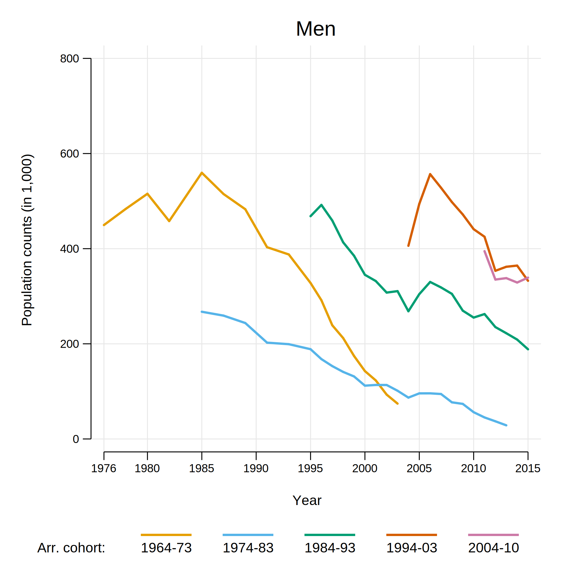(b) Men, age 25-54
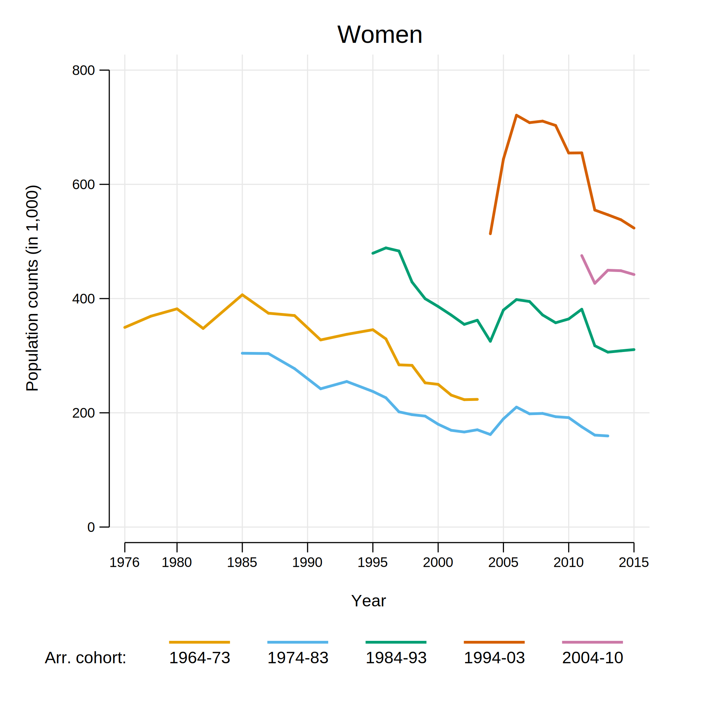(c) Women, age 25+
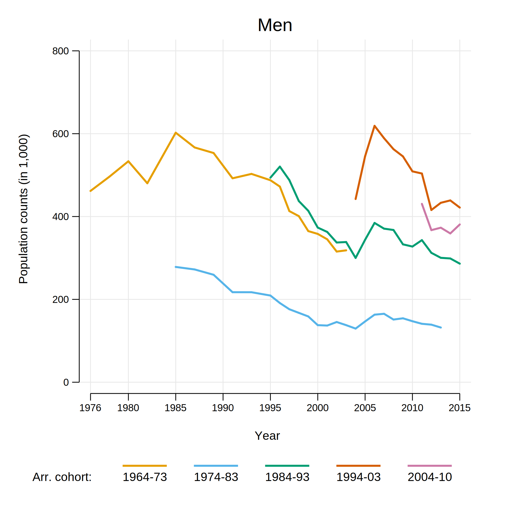(d) Men, age 25+
Figure 2. Cohort size development by period. Different age restrictions.
Table 5. Cohort size development by period, Women (no upper age limit)
Expand
Arrival cohort
German
1964-73
1974-83
1984-93
1994-03
2004-10
Total
n
n
n
n
n
n
n
1976 (n=137,540)
19,048,486
349,548
44,567
0
0
0
19,442,600
1978 (n=137,279)
18,953,148
369,209
75,733
0
0
0
19,398,090
1980 (n=146,049)
20,196,900
382,054
171,329
0
0
0
20,750,283
1982 (n=145,338)
20,005,679
347,714
229,436
0
0
0
20,582,829
1985 (n=146,159)
19,964,972
406,642
304,317
28,988
0
0
20,704,918
1987 (n=149,349)
20,425,940
374,404
303,764
87,383
0
0
21,191,492
1989 (n=135,216)
21,212,346
370,290
277,420
166,521
0
0
22,026,578
1991 (n=134,625)
20,206,424
327,608
242,084
241,693
0
0
21,017,809
1993 (n=137,766)
20,939,779
337,428
254,842
384,900
0
0
21,916,948
1995 (n=144,852)
22,036,431
345,507
237,421
479,334
82,864
0
23,181,557
1996 (n=143,250)
21,870,243
329,439
226,357
488,742
127,403
0
23,042,185
1997 (n=144,301)
22,073,406
283,986
201,728
483,315
174,103
0
23,216,537
1998 (n=144,070)
22,089,317
283,117
196,778
428,963
224,456
0
23,222,630
1999 (n=143,244)
22,040,478
252,531
194,297
399,824
255,491
0
23,142,620
2000 (n=139,089)
21,563,206
249,848
180,067
386,183
311,982
0
22,691,286
2001 (n=141,701)
21,955,613
231,046
169,388
371,161
357,570
0
23,084,779
2002 (n=141,170)
21,961,645
223,036
166,430
354,824
418,839
0
23,124,774
2003 (n=141,152)
21,946,023
223,530
170,311
362,146
490,340
0
23,192,350
2004 (n=139,918)
21,927,980
193,805
161,995
325,242
513,537
9,842
23,132,400
2005 (n=141,402)
22,757,963
248,340
189,432
379,934
644,124
90,153
24,309,946
2006 (n=149,044)
22,823,889
275,366
210,041
398,303
721,004
148,079
24,576,681
2007 (n=145,742)
22,854,424
274,109
198,256
394,901
708,050
226,946
24,656,686
2008 (n=146,042)
22,839,562
257,408
198,924
371,352
710,725
286,558
24,664,529
2009 (n=148,172)
22,738,144
256,148
193,234
357,693
703,092
352,402
24,600,713
2010 (n=148,157)
22,702,843
236,188
191,600
364,349
654,882
417,551
24,567,414
2011 (n=147,552)
22,755,931
224,727
175,455
381,339
655,127
475,260
24,667,838
2012 (n=146,100)
22,662,078
200,424
160,954
317,461
555,007
426,705
24,322,630
2013 (n=144,573)
22,610,988
197,659
159,559
306,253
546,722
449,670
24,270,851
2014 (n=144,208)
22,595,430
190,749
160,062
308,556
538,035
448,799
24,241,632
2015 (n=144,645)
22,727,582
196,511
159,541
310,679
523,480
442,149
24,359,941
Total (n=4,297,705)
650,486,850
8,438,369
5,805,321
8,880,041
9,916,832
3,774,113
687,301,526
Table 6. Cohort size development by period, Men
Expand
Arrival cohort
German
1964-73
1974-83
1984-93
1994-03
2004-10
Total
n
n
n
n
n
n
n
1976 (n=78,000)
10,455,929
449,707
32,226
0
0
0
10,937,862
1978 (n=79,290)
10,575,640
483,538
67,733
0
0
0
11,126,911
1980 (n=81,682)
10,853,831
515,441
155,515
0
0
0
11,524,788
1982 (n=81,982)
10,855,741
458,015
217,456
0
0
0
11,531,212
1985 (n=82,633)
10,839,088
559,559
267,409
43,179
0
0
11,709,234
1987 (n=84,855)
11,182,543
514,864
259,270
90,583
0
0
12,047,260
1989 (n=76,681)
11,668,958
482,915
243,700
184,067
0
0
12,579,639
1991 (n=77,563)
11,371,584
403,119
202,465
247,727
0
0
12,224,896
1993 (n=77,786)
11,530,438
387,875
199,265
402,417
0
0
12,519,994
1995 (n=81,234)
12,106,977
327,901
188,714
468,310
84,589
0
13,176,491
1996 (n=80,526)
12,060,229
291,618
167,893
492,003
124,967
0
13,136,710
1997 (n=80,707)
12,148,129
238,982
153,165
459,155
163,268
0
13,162,699
1998 (n=80,127)
12,122,094
212,089
140,974
413,365
198,069
0
13,086,592
1999 (n=78,768)
11,987,458
174,495
131,420
385,110
235,569
0
12,914,052
2000 (n=76,804)
11,833,025
142,725
112,062
345,112
264,786
0
12,697,709
2001 (n=78,604)
12,111,762
123,027
113,540
331,985
303,854
0
12,984,168
2002 (n=77,965)
12,100,329
93,237
113,440
307,721
333,557
0
12,948,285
2003 (n=77,531)
12,027,856
74,341
101,365
310,751
398,615
0
12,912,928
2004 (n=75,028)
11,770,600
48,763
86,937
268,454
406,134
10,281
12,591,169
2005 (n=71,976)
12,135,515
29,589
95,857
304,443
494,084
80,236
13,139,724
2006 (n=76,436)
12,201,260
24,321
95,923
330,051
556,674
142,696
13,350,925
2007 (n=73,519)
12,028,748
11,815
94,504
318,522
528,044
182,066
13,163,700
2008 (n=73,512)
11,990,210
3,958
77,031
304,990
498,034
241,334
13,115,557
2009 (n=73,409)
11,871,520
1,919
73,762
269,698
471,963
289,853
12,978,714
2010 (n=73,256)
11,789,176
0
56,284
255,186
441,033
349,414
12,891,093
2011 (n=72,528)
11,771,697
0
45,256
262,543
425,065
394,797
12,899,358
2012 (n=71,303)
11,515,002
0
37,140
235,210
353,530
335,111
12,475,993
2013 (n=69,916)
11,410,951
0
28,668
222,291
361,969
338,116
12,361,996
2014 (n=68,988)
11,333,948
0
19,759
208,933
364,439
328,847
12,255,926
2015 (n=68,554)
11,237,463
0
15,440
188,544
332,533
339,140
12,113,120
Total (n=2,301,163)
348,887,700
6,053,813
3,594,172
7,650,352
7,340,777
3,031,892
376,558,704
Table 7. Cohort size development by period, Men (no upper age limit)
Expand
Arrival cohort
German
1964-73
1974-83
1984-93
1994-03
2004-10
Total
n
n
n
n
n
n
n
1976 (n=116,312)
15,848,203
461,850
33,369
0
0
0
16,343,421
1978 (n=117,547)
15,959,458
496,300
70,090
0
0
0
16,525,848
1980 (n=122,685)
16,647,708
533,441
162,492
0
0
0
17,343,640
1982 (n=123,178)
16,650,180
480,300
225,742
0
0
0
17,356,222
1985 (n=125,076)
16,807,154
602,402
278,309
45,464
0
0
17,733,329
1987 (n=128,705)
17,342,205
566,763
272,270
94,512
0
0
18,275,750
1989 (n=115,519)
17,912,039
553,390
259,418
192,790
0
0
18,917,637
1991 (n=117,658)
17,502,123
492,350
217,350
259,249
0
0
18,471,072
1993 (n=120,997)
18,218,102
502,936
217,296
419,149
0
0
19,357,484
1995 (n=128,820)
19,469,786
487,659
209,290
493,807
90,178
0
20,750,720
1996 (n=127,993)
19,422,386
472,339
191,188
520,562
136,132
0
20,742,607
1997 (n=129,590)
19,750,532
413,141
176,197
488,023
173,841
0
21,001,734
1998 (n=129,363)
19,788,828
401,046
167,506
437,412
215,156
0
21,009,949
1999 (n=128,217)
19,720,364
364,847
158,826
413,827
250,257
0
20,908,121
2000 (n=124,826)
19,379,834
358,078
137,780
373,375
285,312
0
20,534,379
2001 (n=127,752)
19,829,000
345,058
136,820
362,811
327,125
0
21,000,814
2002 (n=127,427)
19,901,616
315,435
145,381
337,283
357,501
0
21,057,215
2003 (n=127,718)
19,938,242
318,404
137,779
338,456
434,367
0
21,167,247
2004 (n=125,531)
19,799,692
287,143
129,508
300,090
442,368
11,002
20,969,803
2005 (n=125,648)
20,667,343
359,019
146,720
343,846
545,418
86,264
22,148,611
2006 (n=133,037)
20,816,806
383,017
163,103
384,554
618,924
153,082
22,519,486
2007 (n=129,970)
20,794,247
387,461
165,232
370,792
589,193
195,063
22,501,988
2008 (n=130,537)
20,853,597
347,415
151,318
367,557
562,638
257,549
22,540,074
2009 (n=131,715)
20,818,442
331,014
154,340
332,840
545,162
313,129
22,494,928
2010 (n=132,275)
20,860,023
322,223
147,297
327,569
509,081
383,444
22,549,638
2011 (n=131,749)
20,979,121
300,581
141,092
343,028
503,844
430,574
22,698,239
2012 (n=131,045)
20,696,146
257,748
139,006
312,373
415,790
367,213
22,188,277
2013 (n=129,812)
20,745,352
258,489
132,026
300,349
433,159
373,053
22,242,428
2014 (n=130,188)
20,835,687
253,890
127,743
298,791
438,939
359,210
22,314,261
2015 (n=130,674)
20,913,784
246,439
139,470
286,264
421,663
380,872
22,388,492
Total (n=3,801,564)
578,867,999
11,900,178
4,933,957
8,744,775
8,296,048
3,310,456
616,053,414
Why do we see an increase in cohort size for all arrival cohorts from 2004-2006 and for the first cohort from 1976-1985? The reason is non-response on the arrival year variable, which substantially varies over years:
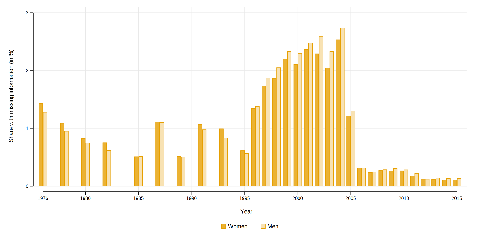Figure 3. Non-response on arrival year variable by year and gender.
Corresponds to analysis sample except for arrival year restrictions. Shares for persons with non-German citizenship who were born abroad. Source: Microcensus Scientific Use Files, DOI: 10.21242/12211.1976.00.00.3.1.0 to 10.21242/12211.2015.00.00.3.1.0, own calculations.
Since 2005, the immigration year question is part of the mandatory questionnaire. The lower non-response rates mean overall higher observation numbers. Table 8 shows that the relative size of cohorts in percent increased to a similar extent at this cut-off. So, probably no selection on the cohort (selection on other characteristics still possible, of course). The changes for cohorts 1964-73 and 1994-2003 are due the age range of 25-54, shares are even closer across years without this restriction.
Table 8. Cohort selective nonresponse test 2004-2006
Expand
Arrival cohort
1964-73
1974-83
1984-93
1994-03
Total
n
%
n
%
n
%
n
%
n
%
2004 (n=8,143)
109,378
6.4
190,551
11.1
547,336
31.8
872,432
50.7
1,719,698
100.0
2005 (n=8,536)
82,567
4.2
213,505
10.7
623,316
31.3
1,068,909
53.8
1,988,297
100.0
2006 (n=9,773)
65,509
3.0
218,323
10.2
660,874
30.7
1,205,837
56.1
2,150,542
100.0
Total (n=26,452)
257,453
4.4
622,379
10.6
1,831,526
31.3
3,147,177
53.7
5,858,537
100.0
2.2.2 Cohort size by duration of stay
Generally, these plots are not really interpretable because many processes are at play that determine the population numbers. One issue is that persons who immigrated at age 18-23 show up in our analysis sample with a timelag due to the age restriction 25-54 (not a problem for the plots by period above). So, some initial gains in cohort size are due to this lag. Other gains certainly follow from the large variation in non-response rates on the arrival year (see above).
(a) Women, age 25-54(b) Men, age 25-54(c) Women, age 18-54
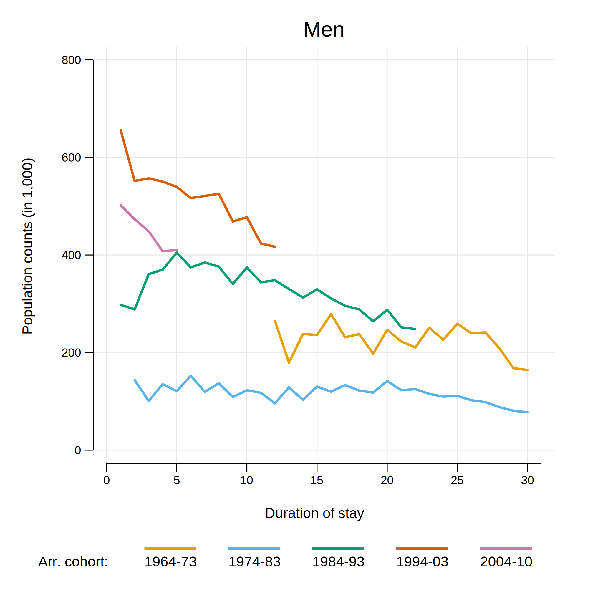(d) Men, age 18-54
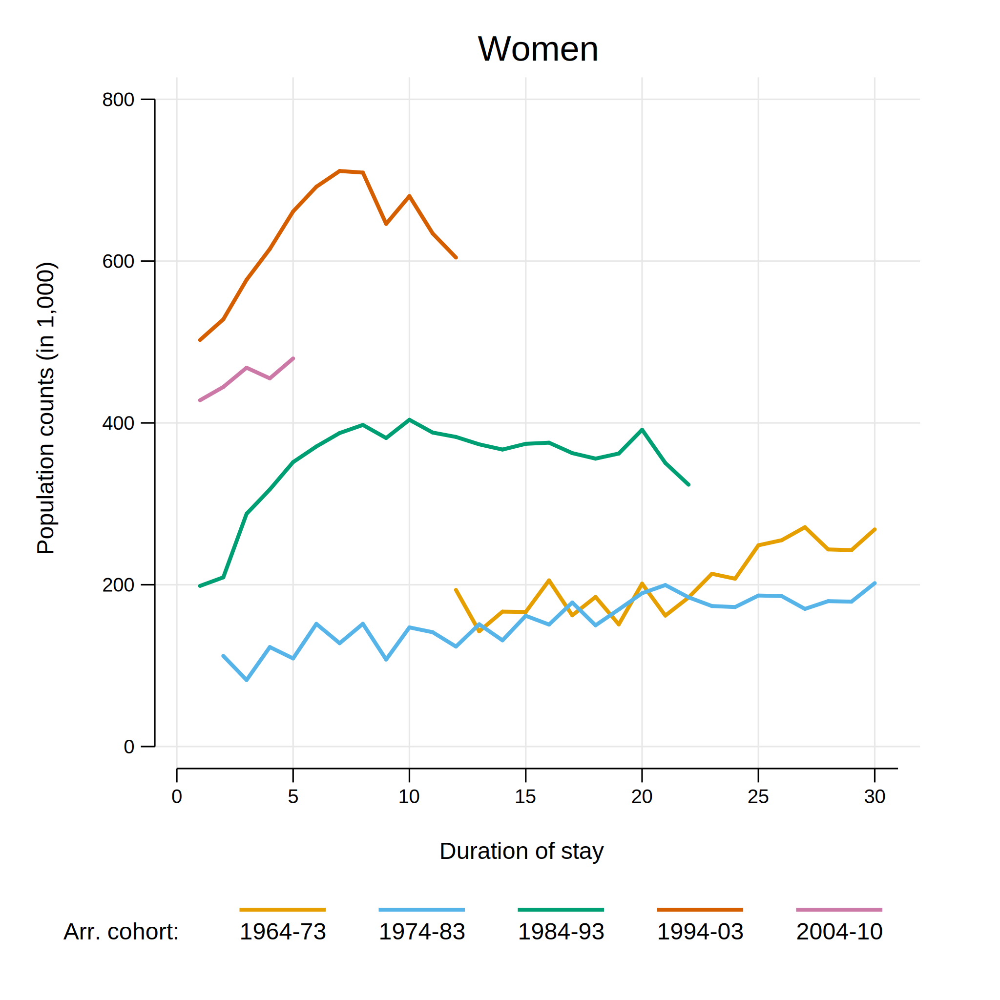(e) Women, age 25+(f) Men, age 25+
Figure 4. Cohort size development by duration of stay. Different age restrictions.
Table 9. Cohort size development by duration of stay, Women
Expand
Arrival cohort
1964-73
1974-83
1984-93
1994-03
2004-10
Total
n
n
n
n
n
n
1 (n=5,517)
0
76,817
182,413
459,322
402,033
1,120,586
2 (n=5,987)
0
105,383
195,204
486,687
414,694
1,201,970
3 (n=6,763)
41,680
76,925
267,998
524,986
433,342
1,344,932
4 (n=7,222)
40,946
114,807
293,842
561,296
421,168
1,432,060
5 (n=8,034)
92,519
102,616
327,230
607,320
440,016
1,569,701
6 (n=8,212)
101,183
144,375
346,313
630,451
374,472
1,596,794
7 (n=8,264)
165,797
122,381
360,071
644,676
290,072
1,582,996
8 (n=7,975)
154,064
143,641
363,144
636,208
225,828
1,522,885
9 (n=7,067)
163,549
101,825
352,473
573,916
158,010
1,349,773
10 (n=7,328)
165,960
139,371
367,691
597,540
110,143
1,380,705
11 (n=6,356)
116,587
134,172
353,619
550,627
52,338
1,207,344
12 (n=6,280)
186,485
113,337
341,436
525,908
0
1,167,165
13 (n=5,554)
136,005
140,481
332,371
438,154
0
1,047,011
14 (n=5,099)
157,962
118,701
319,663
365,666
0
961,992
15 (n=4,894)
154,120
144,798
318,004
301,373
0
918,295
16 (n=4,621)
189,405
132,633
319,334
232,128
0
873,500
17 (n=4,141)
149,093
156,074
301,352
179,515
0
786,034
18 (n=3,728)
166,788
126,713
291,937
127,391
0
712,828
19 (n=3,407)
135,808
146,676
290,892
91,687
0
665,063
20 (n=3,555)
174,738
154,616
300,208
64,614
0
694,176
21 (n=3,037)
138,933
163,810
267,496
24,556
0
594,795
22 (n=2,754)
159,489
146,912
239,206
0
0
545,607
23 (n=2,646)
177,296
136,695
219,521
0
0
533,512
24 (n=2,257)
166,142
129,495
164,321
0
0
459,959
25 (n=2,220)
196,375
129,632
125,740
0
0
451,748
26 (n=1,952)
192,145
122,890
85,887
0
0
400,922
27 (n=1,819)
196,456
109,475
63,666
0
0
369,596
28 (n=1,548)
164,779
111,105
42,447
0
0
318,330
29 (n=1,369)
155,466
102,570
25,266
0
0
283,302
30 (n=1,287)
154,998
93,491
17,199
0
0
265,688
Total (n=140,893)
4,194,769
3,742,415
7,475,946
8,624,021
3,322,116
27,359,268
Table 10. Cohort size development by duration of stay, Women (age 18-54)
Expand
Arrival cohort
1964-73
1974-83
1984-93
1994-03
2004-10
Total
n
n
n
n
n
n
1 (n=8,309)
0
116,817
281,984
707,647
574,234
1,680,682
2 (n=8,171)
0
155,264
279,143
669,506
526,474
1,630,388
3 (n=8,606)
59,389
105,163
359,449
665,189
516,331
1,705,522
4 (n=8,614)
52,280
142,664
359,082
667,288
482,520
1,703,834
5 (n=9,002)
106,686
120,587
372,690
675,166
478,606
1,753,736
6 (n=8,681)
111,226
153,507
373,839
660,082
390,089
1,688,743
7 (n=8,264)
165,797
122,381
360,071
644,676
290,072
1,582,996
8 (n=7,975)
154,064
143,641
363,144
636,208
225,828
1,522,885
9 (n=7,067)
163,549
101,825
352,473
573,916
158,010
1,349,773
10 (n=7,328)
165,960
139,371
367,691
597,540
110,143
1,380,705
11 (n=6,356)
116,587
134,172
353,619
550,627
52,338
1,207,344
12 (n=6,280)
186,485
113,337
341,436
525,908
0
1,167,165
13 (n=5,554)
136,005
140,481
332,371
438,154
0
1,047,011
14 (n=5,099)
157,962
118,701
319,663
365,666
0
961,992
15 (n=4,894)
154,120
144,798
318,004
301,373
0
918,295
16 (n=4,621)
189,405
132,633
319,334
232,128
0
873,500
17 (n=4,141)
149,093
156,074
301,352
179,515
0
786,034
18 (n=3,728)
166,788
126,713
291,937
127,391
0
712,828
19 (n=3,407)
135,808
146,676
290,892
91,687
0
665,063
20 (n=3,555)
174,738
154,616
300,208
64,614
0
694,176
21 (n=3,037)
138,933
163,810
267,496
24,556
0
594,795
22 (n=2,754)
159,489
146,912
239,206
0
0
545,607
23 (n=2,646)
177,296
136,695
219,521
0
0
533,512
24 (n=2,257)
166,142
129,495
164,321
0
0
459,959
25 (n=2,220)
196,375
129,632
125,740
0
0
451,748
26 (n=1,952)
192,145
122,890
85,887
0
0
400,922
27 (n=1,819)
196,456
109,475
63,666
0
0
369,596
28 (n=1,548)
164,779
111,105
42,447
0
0
318,330
29 (n=1,369)
155,466
102,570
25,266
0
0
283,302
30 (n=1,287)
154,998
93,491
17,199
0
0
265,688
Total (n=150,541)
4,248,021
3,915,495
7,889,135
9,398,837
3,804,645
29,256,133
Table 11. Cohort size development by duration of stay, Women (no upper age limit)
Expand
Arrival cohort
1964-73
1974-83
1984-93
1994-03
2004-10
Total
n
n
n
n
n
n
1 (n=5,968)
0
81,996
198,566
502,527
428,020
1,211,109
2 (n=6,439)
0
112,026
209,155
528,046
444,445
1,293,672
3 (n=7,308)
42,632
82,211
287,648
576,935
468,232
1,457,658
4 (n=7,802)
41,375
122,950
317,771
615,034
455,085
1,552,214
5 (n=8,651)
95,662
108,902
351,556
661,374
479,669
1,697,163
6 (n=8,831)
104,040
151,623
370,849
691,932
407,107
1,725,551
7 (n=8,892)
169,208
127,726
387,526
711,394
316,765
1,712,619
8 (n=8,658)
158,778
151,708
397,515
709,450
248,276
1,665,728
9 (n=7,669)
168,216
107,548
381,332
646,028
172,739
1,475,864
10 (n=8,051)
173,437
147,269
403,909
680,311
125,801
1,530,727
11 (n=7,022)
121,301
141,319
388,110
634,237
59,171
1,344,139
12 (n=6,949)
193,628
123,574
382,681
604,442
0
1,304,325
13 (n=6,217)
142,434
151,110
373,537
514,852
0
1,181,933
14 (n=5,788)
166,763
131,277
367,100
436,280
0
1,101,420
15 (n=5,625)
166,334
161,640
374,204
364,294
0
1,066,472
16 (n=5,336)
205,341
150,755
375,587
286,096
0
1,017,778
17 (n=4,823)
162,183
178,034
362,664
221,478
0
924,359
18 (n=4,397)
184,911
149,862
355,895
156,415
0
847,083
19 (n=4,061)
150,996
169,430
362,169
116,321
0
798,915
20 (n=4,418)
201,345
189,509
391,601
83,849
0
866,304
21 (n=3,776)
161,856
199,614
350,518
30,823
0
742,811
22 (n=3,473)
184,244
184,435
323,673
0
0
692,353
23 (n=3,405)
213,555
173,684
299,507
0
0
686,747
24 (n=2,980)
207,421
172,404
226,730
0
0
606,555
25 (n=3,076)
248,774
186,671
189,024
0
0
624,469
26 (n=2,810)
255,010
186,013
133,786
0
0
574,809
27 (n=2,666)
271,149
170,133
99,867
0
0
541,148
28 (n=2,400)
243,628
179,689
69,111
0
0
492,429
29 (n=2,262)
242,766
179,093
45,075
0
0
466,934
30 (n=2,430)
268,387
201,940
33,117
0
0
503,444
Total (n=162,183)
4,945,375
4,574,145
8,809,784
9,772,118
3,605,310
31,706,732
Table 12. Cohort size development by duration of stay, Men
Expand
Arrival cohort
1964-73
1974-83
1984-93
1994-03
2004-10
Total
n
n
n
n
n
n
1 (n=5,475)
0
76,762
219,341
479,467
395,821
1,171,390
2 (n=5,402)
0
105,321
222,294
428,863
384,328
1,140,808
3 (n=6,186)
45,764
81,316
298,978
470,325
398,940
1,295,323
4 (n=6,421)
50,948
114,552
324,782
491,954
368,693
1,350,930
5 (n=7,218)
111,500
109,233
370,980
502,758
388,054
1,482,526
6 (n=7,077)
130,388
145,770
361,426
503,747
285,626
1,426,956
7 (n=7,444)
211,358
119,694
384,637
521,116
235,805
1,472,610
8 (n=7,033)
192,620
136,994
376,203
525,514
170,371
1,401,703
9 (n=6,437)
224,487
108,817
340,503
468,698
114,669
1,257,174
10 (n=6,562)
230,248
122,879
374,577
477,568
83,246
1,288,517
11 (n=5,593)
171,216
117,473
344,009
423,761
37,924
1,094,382
12 (n=5,888)
265,144
96,051
348,329
416,908
0
1,126,432
13 (n=5,014)
179,371
128,702
330,212
340,141
0
978,426
14 (n=4,943)
238,356
103,308
312,756
292,077
0
946,496
15 (n=4,967)
235,931
130,293
329,571
253,890
0
949,684
16 (n=4,647)
279,072
119,875
311,003
178,700
0
888,650
17 (n=4,209)
231,435
133,493
296,038
145,852
0
806,819
18 (n=3,866)
237,902
122,078
288,667
107,203
0
755,851
19 (n=3,327)
197,476
118,029
264,087
83,037
0
662,630
20 (n=3,627)
246,925
141,826
287,797
56,143
0
732,691
21 (n=3,135)
222,867
122,884
251,981
22,565
0
620,297
22 (n=2,890)
210,545
124,993
248,181
0
0
583,719
23 (n=2,816)
251,016
115,345
206,518
0
0
572,878
24 (n=2,329)
226,235
109,798
154,075
0
0
490,108
25 (n=2,331)
259,169
111,084
117,085
0
0
487,338
26 (n=1,993)
239,569
102,410
76,434
0
0
418,413
27 (n=1,870)
241,456
98,428
54,259
0
0
394,144
28 (n=1,560)
208,697
88,237
32,866
0
0
329,801
29 (n=1,276)
168,198
80,725
19,764
0
0
268,688
30 (n=1,222)
164,266
77,698
13,824
0
0
255,788
Total (n=132,758)
5,672,160
3,364,070
7,561,177
7,190,288
2,863,477
26,651,171
Table 13. Cohort size development by duration of stay, Men (age 18-54)
Expand
Arrival cohort
1964-73
1974-83
1984-93
1994-03
2004-10
Total
n
n
n
n
n
n
1 (n=7,386)
0
115,476
297,854
656,284
502,309
1,571,924
2 (n=6,904)
0
143,750
288,620
551,854
473,406
1,457,631
3 (n=7,275)
55,907
100,744
360,921
557,153
448,461
1,523,186
4 (n=7,237)
55,662
135,552
370,022
550,446
407,717
1,519,398
5 (n=7,767)
119,595
120,948
405,068
539,703
410,169
1,595,483
6 (n=7,323)
136,388
152,540
374,755
516,784
294,822
1,475,288
7 (n=7,444)
211,358
119,694
384,637
521,116
235,805
1,472,610
8 (n=7,033)
192,620
136,994
376,203
525,514
170,371
1,401,703
9 (n=6,437)
224,487
108,817
340,503
468,698
114,669
1,257,174
10 (n=6,562)
230,248
122,879
374,577
477,568
83,246
1,288,517
11 (n=5,593)
171,216
117,473
344,009
423,761
37,924
1,094,382
12 (n=5,888)
265,144
96,051
348,329
416,908
0
1,126,432
13 (n=5,014)
179,371
128,702
330,212
340,141
0
978,426
14 (n=4,943)
238,356
103,308
312,756
292,077
0
946,496
15 (n=4,967)
235,931
130,293
329,571
253,890
0
949,684
16 (n=4,647)
279,072
119,875
311,003
178,700
0
888,650
17 (n=4,209)
231,435
133,493
296,038
145,852
0
806,819
18 (n=3,866)
237,902
122,078
288,667
107,203
0
755,851
19 (n=3,327)
197,476
118,029
264,087
83,037
0
662,630
20 (n=3,627)
246,925
141,826
287,797
56,143
0
732,691
21 (n=3,135)
222,867
122,884
251,981
22,565
0
620,297
22 (n=2,890)
210,545
124,993
248,181
0
0
583,719
23 (n=2,816)
251,016
115,345
206,518
0
0
572,878
24 (n=2,329)
226,235
109,798
154,075
0
0
490,108
25 (n=2,331)
259,169
111,084
117,085
0
0
487,338
26 (n=1,993)
239,569
102,410
76,434
0
0
418,413
27 (n=1,870)
241,456
98,428
54,259
0
0
394,144
28 (n=1,560)
208,697
88,237
32,866
0
0
329,801
29 (n=1,276)
168,198
80,725
19,764
0
0
268,688
30 (n=1,222)
164,266
77,698
13,824
0
0
255,788
Total (n=138,871)
5,701,112
3,500,126
7,860,615
7,685,397
3,178,898
27,926,149
Table 14. Cohort size development by duration of stay, Men (no upper age limit)
Expand
Arrival cohort
1964-73
1974-83
1984-93
1994-03
2004-10
Total
n
n
n
n
n
n
1 (n=5,841)
0
80,976
230,101
518,293
419,837
1,249,207
2 (n=5,792)
0
109,250
234,856
468,241
415,249
1,227,596
3 (n=6,583)
45,907
84,858
311,720
507,994
432,709
1,383,189
4 (n=6,831)
51,662
118,814
341,929
529,198
400,151
1,441,753
5 (n=7,642)
113,071
113,376
387,531
539,900
420,982
1,574,862
6 (n=7,544)
133,102
151,239
378,395
552,416
318,319
1,533,470
7 (n=7,966)
216,929
124,137
406,588
576,773
263,454
1,587,881
8 (n=7,555)
197,335
143,539
400,118
583,039
191,316
1,515,346
9 (n=6,946)
229,058
115,482
363,563
530,055
130,163
1,368,322
10 (n=7,161)
238,819
130,809
404,575
547,822
96,405
1,418,430
11 (n=6,085)
177,977
123,934
369,555
485,252
42,670
1,199,388
12 (n=6,434)
275,001
104,204
375,245
488,679
0
1,243,129
13 (n=5,527)
187,085
136,313
360,830
400,319
0
1,084,547
14 (n=5,474)
247,785
113,224
345,203
352,379
0
1,058,591
15 (n=5,520)
249,288
143,335
365,694
307,488
0
1,065,805
16 (n=5,225)
299,455
132,968
354,676
219,597
0
1,006,695
17 (n=4,778)
248,575
148,004
349,141
182,095
0
927,815
18 (n=4,471)
259,573
139,974
342,435
139,505
0
881,487
19 (n=3,901)
221,872
135,215
322,983
102,736
0
782,806
20 (n=4,386)
288,317
169,703
357,348
74,939
0
890,307
21 (n=3,838)
263,264
147,797
320,635
30,351
0
762,047
22 (n=3,602)
257,690
152,733
322,129
0
0
732,552
23 (n=3,593)
316,643
144,170
274,175
0
0
734,988
24 (n=3,066)
297,023
138,148
214,394
0
0
649,565
25 (n=3,279)
365,966
150,346
175,378
0
0
691,690
26 (n=2,983)
360,178
149,420
122,828
0
0
632,426
27 (n=2,917)
383,492
146,991
86,711
0
0
617,195
28 (n=2,644)
361,086
146,987
56,339
0
0
564,412
29 (n=2,414)
337,903
136,772
41,019
0
0
515,694
30 (n=2,797)
393,836
173,819
29,274
0
0
596,929
Total (n=152,795)
7,017,891
4,006,539
8,645,370
8,137,070
3,131,254
30,938,125
2.2.3 Education by duration of stay
Regarding the presumed higher remigration rates for skilled individuals, we observe higher average levels of education for migrants with a shorter duration of stay compared to migrants with a longer duration of stay (see Tables 16, 20). We find the largest differences within the first years of residence. For example, consider migrant women from arrival cohort 1984-1993. Given a duration of stay between 0 and 3 years, 25.4 percent of these women had some sort of tertiary education. Yet, for a duration of stay of 7-9 years, the share of women with tertiary education was only 18.3 percent. We find similar patterns across cohorts and stronger patterns for men than women, matching our results for occupational status (see Figures 11a, 11b). Only a minor part of these patterns is explained by selectivity in arrival age (see Tables 15, 19, Figures 12c, 12d). Thus, on average, highly educated (labor) migrants seem to stay for rather short durations.
Table 15. Educational levels (ISCED-97) by cohort and arrival age groups, Women (duration of stay 1-6)
Expand
Arrival cohort
1964-73
1974-83
1984-93
1994-03
2004-10
Total
%
%
%
%
%
%
Excluded by age restriction 25-54
0-2 (n=4,979)
72.6
62.5
54.6
41.4
34.9
45.1
3-4 (n=3,121)
23.6
26.1
31.9
29.7
25.3
28.5
5-6 (n=2,585)
3.8
11.4
13.5
28.9
39.8
26.4
Total (n=10,685)
100.0
100.0
100.0
100.0
100.0
100.0
Included by age restriction 25-54
0-2 (n=13,091)
73.6
59.1
44.3
35.9
28.0
37.8
3-4 (n=10,492)
20.9
23.4
32.0
33.3
31.6
31.4
5-6 (n=9,946)
5.5
17.5
23.7
30.8
40.4
30.8
Total (n=33,529)
100.0
100.0
100.0
100.0
100.0
100.0
Table 16. Educational levels (ISCED-97) by cohort and duration of stay, Women
Expand
Arrival cohort
1964-1973
1974-1983
1984-1993
1994-2003
2004-2010
Total
%
%
%
%
%
ISCED, dur. of stay: 0-3y.
0-2 (n=6,103)
58.7
42.3
33.8
26.2
33.9
3-4 (n=5,484)
23.3
32.3
32.8
30.3
31.3
5-6 (n=5,846)
18.0
25.4
33.5
43.5
34.7
Total (n=17,433)
100.0
100.0
100.0
100.0
100.0
ISCED, dur. of stay: 3-6y.
0-2 (n=8,163)
58.6
47.3
38.2
28.5
40.2
3-4 (n=6,398)
24.4
32.3
33.2
33.0
32.1
5-6 (n=5,392)
17.0
20.4
28.6
38.5
27.7
Total (n=19,953)
100.0
100.0
100.0
100.0
100.0
ISCED, dur. of stay: 6-9y.
0-2 (n=7,566)
64.3
50.2
38.6
45.3
3-4 (n=5,222)
23.0
31.5
33.7
31.8
5-6 (n=3,671)
12.7
18.3
27.7
22.9
Total (n=16,459)
100.0
100.0
100.0
100.0
ISCED, dur. of stay: 9-12y.
0-2 (n=8,430)
70.5
63.6
51.6
41.0
48.7
3-4 (n=5,343)
24.0
23.6
31.9
33.4
31.2
5-6 (n=3,361)
5.6
12.8
16.5
25.6
20.1
Total (n=17,134)
100.0
100.0
100.0
100.0
100.0
ISCED, dur. of stay: 12-15y.
0-2 (n=6,054)
72.5
62.5
53.6
60.2
3-4 (n=2,674)
21.6
25.6
31.1
27.5
5-6 (n=1,175)
5.9
12.0
15.4
12.3
Total (n=9,903)
100.0
100.0
100.0
100.0
ISCED, dur. of stay: 15-18y.
0-2 (n=5,947)
71.9
62.0
54.8
61.1
3-4 (n=2,629)
22.7
26.6
30.7
27.6
5-6 (n=1,074)
5.4
11.4
14.5
11.3
Total (n=9,650)
100.0
100.0
100.0
100.0
ISCED, dur. of stay: 18-21y.
0-2 (n=5,464)
72.7
62.0
53.9
60.8
3-4 (n=2,538)
21.9
27.4
31.0
27.8
5-6 (n=1,051)
5.3
10.6
15.0
11.4
Total (n=9,053)
100.0
100.0
100.0
100.0
Table 17. Educational levels (ISCED-97) by cohort and duration of stay, Women (age 18-54)
Expand
Arrival cohort
1964-1973
1974-1983
1984-1993
1994-2003
2004-2010
Total
%
%
%
%
%
ISCED, dur. of stay: 0-3y.
0-2 (n=8,891)
60.2
45.1
35.5
28.1
36.2
3-4 (n=7,395)
24.0
32.7
32.0
29.0
30.7
5-6 (n=7,561)
15.8
22.3
32.5
43.0
33.2
Total (n=23,847)
100.0
100.0
100.0
100.0
100.0
ISCED, dur. of stay: 3-6y.
0-2 (n=9,511)
59.3
48.9
39.4
29.9
41.6
3-4 (n=7,106)
24.6
32.0
32.5
32.4
31.6
5-6 (n=5,843)
16.1
19.0
28.1
37.6
26.8
Total (n=22,460)
100.0
100.0
100.0
100.0
100.0
ISCED, dur. of stay: 6-9y.
0-2 (n=7,566)
64.3
50.2
38.6
45.3
3-4 (n=5,222)
23.0
31.5
33.7
31.8
5-6 (n=3,671)
12.7
18.3
27.7
22.9
Total (n=16,459)
100.0
100.0
100.0
100.0
ISCED, dur. of stay: 9-12y.
0-2 (n=8,430)
70.5
63.6
51.6
41.0
48.7
3-4 (n=5,343)
24.0
23.6
31.9
33.4
31.2
5-6 (n=3,361)
5.6
12.8
16.5
25.6
20.1
Total (n=17,134)
100.0
100.0
100.0
100.0
100.0
ISCED, dur. of stay: 12-15y.
0-2 (n=6,054)
72.5
62.5
53.6
60.2
3-4 (n=2,674)
21.6
25.6
31.1
27.5
5-6 (n=1,175)
5.9
12.0
15.4
12.3
Total (n=9,903)
100.0
100.0
100.0
100.0
ISCED, dur. of stay: 15-18y.
0-2 (n=5,947)
71.9
62.0
54.8
61.1
3-4 (n=2,629)
22.7
26.6
30.7
27.6
5-6 (n=1,074)
5.4
11.4
14.5
11.3
Total (n=9,650)
100.0
100.0
100.0
100.0
ISCED, dur. of stay: 18-21y.
0-2 (n=5,464)
72.7
62.0
53.9
60.8
3-4 (n=2,538)
21.9
27.4
31.0
27.8
5-6 (n=1,051)
5.3
10.6
15.0
11.4
Total (n=9,053)
100.0
100.0
100.0
100.0
Table 18. Educational levels (ISCED-97) by cohort and duration of stay, Women (no upper age limit)
Expand
Arrival cohort
1964-1973
1974-1983
1984-1993
1994-2003
2004-2010
Total
%
%
%
%
%
ISCED, dur. of stay: 0-3y.
0-2 (n=6,773)
58.6
44.0
34.7
27.0
34.9
3-4 (n=5,864)
23.8
31.5
32.1
30.4
31.0
5-6 (n=6,200)
17.6
24.5
33.2
42.6
34.1
Total (n=18,837)
100.0
100.0
100.0
100.0
100.0
ISCED, dur. of stay: 3-6y.
0-2 (n=8,954)
58.6
48.7
38.4
30.0
40.8
3-4 (n=6,810)
24.8
31.2
32.4
32.8
31.6
5-6 (n=5,797)
16.6
20.0
29.2
37.2
27.6
Total (n=21,561)
100.0
100.0
100.0
100.0
100.0
ISCED, dur. of stay: 6-9y.
0-2 (n=8,313)
64.5
51.7
38.7
45.6
3-4 (n=5,577)
22.8
30.6
32.8
31.0
5-6 (n=4,067)
12.6
17.8
28.5
23.3
Total (n=17,957)
100.0
100.0
100.0
100.0
ISCED, dur. of stay: 9-12y.
0-2 (n=9,444)
70.4
64.6
53.5
41.4
49.3
3-4 (n=5,780)
24.1
23.0
30.4
32.5
30.3
5-6 (n=3,769)
5.6
12.3
16.1
26.2
20.3
Total (n=18,993)
100.0
100.0
100.0
100.0
100.0
ISCED, dur. of stay: 12-15y.
0-2 (n=6,810)
73.0
63.8
55.5
61.4
3-4 (n=2,864)
21.3
24.6
29.5
26.5
5-6 (n=1,283)
5.8
11.6
15.0
12.1
Total (n=10,957)
100.0
100.0
100.0
100.0
ISCED, dur. of stay: 15-18y.
0-2 (n=6,968)
72.3
64.1
56.8
62.5
3-4 (n=2,886)
22.4
24.9
28.8
26.2
5-6 (n=1,231)
5.3
11.0
14.4
11.3
Total (n=11,085)
100.0
100.0
100.0
100.0
ISCED, dur. of stay: 18-21y.
0-2 (n=6,880)
73.6
65.0
56.3
62.6
3-4 (n=2,886)
21.3
25.1
28.4
25.9
5-6 (n=1,285)
5.1
9.9
15.3
11.5
Total (n=11,051)
100.0
100.0
100.0
100.0
Table 19. Educational levels (ISCED-97) by cohort and arrival age groups, Men (duration of stay 1-6)
Expand
Arrival cohort
1964-73
1974-83
1984-93
1994-03
2004-10
Total
%
%
%
%
%
%
Excluded by age restriction 25-54
0-2 (n=2,527)
45.7
49.8
43.4
33.0
22.0
34.6
3-4 (n=2,147)
42.9
30.9
37.9
30.1
24.1
30.7
5-6 (n=2,141)
11.3
19.3
18.7
36.9
53.9
34.8
Total (n=6,815)
100.0
100.0
100.0
100.0
100.0
100.0
Included by age restriction 25-54
0-2 (n=9,663)
59.0
39.0
31.2
28.0
23.5
29.4
3-4 (n=11,042)
30.9
29.7
38.7
35.3
35.3
35.4
5-6 (n=10,490)
10.1
31.3
30.2
36.8
41.2
35.2
Total (n=31,195)
100.0
100.0
100.0
100.0
100.0
100.0
Table 20. Educational levels (ISCED-97) by cohort and duration of stay, Men
Expand
Arrival cohort
1964-1973
1974-1983
1984-1993
1994-2003
2004-2010
Total
%
%
%
%
%
ISCED, dur. of stay: 0-3y.
0-2 (n=4,541)
41.6
32.0
26.1
21.7
26.7
3-4 (n=5,606)
30.1
35.9
35.3
32.5
34.2
5-6 (n=6,054)
28.3
32.1
38.6
45.8
39.1
Total (n=16,201)
100.0
100.0
100.0
100.0
100.0
ISCED, dur. of stay: 3-6y.
0-2 (n=5,729)
38.4
33.7
32.1
26.0
31.9
3-4 (n=6,482)
34.4
42.0
34.0
37.2
37.0
5-6 (n=5,157)
27.2
24.2
33.9
36.8
31.1
Total (n=17,368)
100.0
100.0
100.0
100.0
100.0
ISCED, dur. of stay: 6-9y.
0-2 (n=5,271)
39.6
38.3
35.3
36.9
3-4 (n=5,360)
37.1
39.8
36.1
37.6
5-6 (n=3,463)
23.2
22.0
28.6
25.5
Total (n=14,094)
100.0
100.0
100.0
100.0
ISCED, dur. of stay: 9-12y.
0-2 (n=5,771)
53.5
40.2
36.8
36.3
38.4
3-4 (n=5,884)
37.5
38.0
43.4
38.9
40.3
5-6 (n=3,002)
9.0
21.8
19.7
24.9
21.3
Total (n=14,657)
100.0
100.0
100.0
100.0
100.0
ISCED, dur. of stay: 12-15y.
0-2 (n=4,954)
54.4
38.4
39.6
44.3
3-4 (n=4,262)
36.5
39.5
42.6
40.0
5-6 (n=1,603)
9.1
22.1
17.8
15.7
Total (n=10,819)
100.0
100.0
100.0
100.0
ISCED, dur. of stay: 15-18y.
0-2 (n=5,063)
55.2
39.8
41.2
46.1
3-4 (n=4,209)
37.3
41.6
41.4
39.9
5-6 (n=1,387)
7.5
18.5
17.3
13.9
Total (n=10,659)
100.0
100.0
100.0
100.0
ISCED, dur. of stay: 18-21y.
0-2 (n=4,383)
55.1
40.7
42.5
46.7
3-4 (n=3,729)
37.0
41.5
42.5
40.3
5-6 (n=1,189)
7.9
17.8
15.0
13.0
Total (n=9,301)
100.0
100.0
100.0
100.0
Table 21. Educational levels (ISCED-97) by cohort and duration of stay, Men (age 18-54)
Expand
Arrival cohort
1964-1973
1974-1983
1984-1993
1994-2003
2004-2010
Total
%
%
%
%
%
ISCED, dur. of stay: 0-3y.
0-2 (n=6,001)
42.6
34.4
27.5
21.8
28.0
3-4 (n=6,873)
31.2
36.1
34.0
30.7
33.2
5-6 (n=7,487)
26.1
29.5
38.5
47.6
38.8
Total (n=20,361)
100.0
100.0
100.0
100.0
100.0
ISCED, dur. of stay: 3-6y.
0-2 (n=6,330)
40.0
34.6
32.4
25.8
32.5
3-4 (n=6,952)
33.5
41.8
33.7
36.9
36.7
5-6 (n=5,528)
26.4
23.6
33.9
37.3
30.9
Total (n=18,810)
100.0
100.0
100.0
100.0
100.0
ISCED, dur. of stay: 6-9y.
0-2 (n=5,271)
39.6
38.3
35.3
36.9
3-4 (n=5,360)
37.1
39.8
36.1
37.6
5-6 (n=3,463)
23.2
22.0
28.6
25.5
Total (n=14,094)
100.0
100.0
100.0
100.0
ISCED, dur. of stay: 9-12y.
0-2 (n=5,771)
53.5
40.2
36.8
36.3
38.4
3-4 (n=5,884)
37.5
38.0
43.4
38.9
40.3
5-6 (n=3,002)
9.0
21.8
19.7
24.9
21.3
Total (n=14,657)
100.0
100.0
100.0
100.0
100.0
ISCED, dur. of stay: 12-15y.
0-2 (n=4,954)
54.4
38.4
39.6
44.3
3-4 (n=4,262)
36.5
39.5
42.6
40.0
5-6 (n=1,603)
9.1
22.1
17.8
15.7
Total (n=10,819)
100.0
100.0
100.0
100.0
ISCED, dur. of stay: 15-18y.
0-2 (n=5,063)
55.2
39.8
41.2
46.1
3-4 (n=4,209)
37.3
41.6
41.4
39.9
5-6 (n=1,387)
7.5
18.5
17.3
13.9
Total (n=10,659)
100.0
100.0
100.0
100.0
ISCED, dur. of stay: 18-21y.
0-2 (n=4,383)
55.1
40.7
42.5
46.7
3-4 (n=3,729)
37.0
41.5
42.5
40.3
5-6 (n=1,189)
7.9
17.8
15.0
13.0
Total (n=9,301)
100.0
100.0
100.0
100.0
Table 22. Educational levels (ISCED-97) by cohort and duration of stay, Men (no upper age limit)
Expand
Arrival cohort
1964-1973
1974-1983
1984-1993
1994-2003
2004-2010
Total
%
%
%
%
%
ISCED, dur. of stay: 0-3y.
0-2 (n=4,844)
40.9
32.2
26.3
21.5
26.7
3-4 (n=5,961)
30.6
35.7
34.9
32.5
34.0
5-6 (n=6,518)
28.5
32.1
38.8
45.9
39.3
Total (n=17,323)
100.0
100.0
100.0
100.0
100.0
ISCED, dur. of stay: 3-6y.
0-2 (n=6,073)
38.3
34.1
31.7
25.8
31.8
3-4 (n=6,812)
34.3
41.3
33.7
37.1
36.6
5-6 (n=5,605)
27.5
24.6
34.6
37.1
31.6
Total (n=18,490)
100.0
100.0
100.0
100.0
100.0
ISCED, dur. of stay: 6-9y.
0-2 (n=5,623)
39.5
38.6
34.2
36.4
3-4 (n=5,680)
36.8
38.9
35.3
36.8
5-6 (n=3,944)
23.7
22.4
30.5
26.8
Total (n=15,247)
100.0
100.0
100.0
100.0
ISCED, dur. of stay: 9-12y.
0-2 (n=6,306)
53.4
40.3
37.1
35.9
38.3
3-4 (n=6,298)
37.3
37.5
42.6
37.2
39.1
5-6 (n=3,499)
9.3
22.1
20.3
26.9
22.6
Total (n=16,103)
100.0
100.0
100.0
100.0
100.0
ISCED, dur. of stay: 12-15y.
0-2 (n=5,334)
54.4
39.3
40.0
44.4
3-4 (n=4,498)
36.4
38.2
41.4
39.2
5-6 (n=1,787)
9.2
22.5
18.6
16.3
Total (n=11,619)
100.0
100.0
100.0
100.0
ISCED, dur. of stay: 15-18y.
0-2 (n=5,658)
55.8
40.4
41.1
46.2
3-4 (n=4,556)
36.1
40.4
39.8
38.6
5-6 (n=1,687)
8.0
19.2
19.1
15.2
Total (n=11,901)
100.0
100.0
100.0
100.0
ISCED, dur. of stay: 18-21y.
0-2 (n=5,298)
56.5
41.3
42.3
47.0
3-4 (n=4,265)
35.6
40.4
39.9
38.5
5-6 (n=1,558)
7.8
18.3
17.8
14.4
Total (n=11,121)
100.0
100.0
100.0
100.0
2.2.4 Education by naturalization status
Note: Unrestricted in terms of upper age bound.
We find that average educational levels of immigrant women and men are lower for longer durations of stay, but the decrease is much less pronounced than the one over the first years (see Tables 16, 20). A possible explanation of this decline is again selective outmigration, but also selective naturalization might play a larger role, given that long durations of residence are required for migrants to naturalize in Germany (currently: 8 years). As we cannot follow the same individuals over time in the Microcensus, there is no way to assess the magnitude of both possible processes. However, in recent waves of the Microcensus information on naturalization is available. Based on the years 2007-2015, we compared the educational levels of migrants who naturalized and those who did not (without upper age limit, see Tables 23, 24). Especially regarding the earlier cohorts, naturalized migrant women and men seem to be much better educated (naturalization rates being fairly even between genders). Consequently, if more and more skilled migrants naturalize with longer durations of stay, these drop out of our sample, leading to an underestimation of occupational mobility of arrival cohorts.
Table 23. ISCED-97 composition by arrival cohort and naturalization, Women, 2007-2015 (no upper age limit)
Expand
Arrival cohort
1964-73
1974-83
1984-93
1994-03
2004-10
Total
N
%
%
%
%
%
%
ISCED-97, non-naturalized immigrant
0-2
69.5
65.1
55.6
40.2
30.2
47.2
37,139
3-4
24.8
23.7
29.7
32.7
32.4
30.1
23,786
5-6
5.7
11.2
14.7
27.1
37.5
22.6
17,522
Total
100.0
100.0
100.0
100.0
100.0
100.0
78,447
N
10,119
8,068
15,429
27,736
17,095
78,447
ISCED-97, naturalized immigrant
0-2
45.3
34.9
32.0
34.1
33.7
33.8
9,508
3-4
35.8
45.6
50.5
46.9
46.4
47.8
13,367
5-6
18.9
19.6
17.5
19.0
20.0
18.4
5,140
Total
100.0
100.0
100.0
100.0
100.0
100.0
28,015
N
1,432
3,000
12,572
10,143
868
28,015
ISCED-97, naturalized/recognized Ethnic German
0-2
43.0
36.6
32.5
31.6
29.7
33.3
12,917
3-4
40.8
42.4
47.8
43.7
39.3
44.7
17,275
5-6
16.2
21.1
19.7
24.7
30.9
22.0
8,495
Total
100.0
100.0
100.0
100.0
100.0
100.0
38,687
N
3,099
4,555
15,279
13,834
1,920
38,687
Table 24. ISCED-97 composition by arrival cohort and naturalization, Men, 2007-2015 (no upper age limit)
Expand
Arrival cohort
1964-73
1974-83
1984-93
1994-03
2004-10
Total
N
%
%
%
%
%
%
ISCED-97, non-naturalized immigrant
0-2
55.3
42.6
42.4
35.4
24.9
39.0
26,150
3-4
36.7
39.0
40.5
36.4
35.9
37.4
24,463
5-6
8.0
18.4
17.1
28.2
39.2
23.6
14,774
Total
100.0
100.0
100.0
100.0
100.0
100.0
65,387
N
12,773
6,034
13,544
19,792
13,244
65,387
ISCED-97, naturalized immigrant
0-2
26.1
18.5
21.1
28.9
33.4
24.2
5,816
3-4
44.6
50.8
58.5
55.2
48.8
55.6
13,483
5-6
29.3
30.7
20.4
15.9
17.8
20.2
4,926
Total
100.0
100.0
100.0
100.0
100.0
100.0
24,225
N
1,114
2,607
11,348
8,513
643
24,225
ISCED-97, naturalized/recognized Ethnic German
0-2
28.1
22.5
23.0
28.9
28.1
25.6
8,515
3-4
42.2
45.7
54.1
49.2
42.4
50.0
16,737
5-6
29.7
31.8
22.9
21.9
29.5
24.4
8,239
Total
100.0
100.0
100.0
100.0
100.0
100.0
33,491
N
2,570
4,242
14,093
11,228
1,358
33,491
2.2.5 Employment indicators by naturalization status
Note: Restricted in terms of upper age bound (age 25-54).
This comparison is most sensible for all arrival cohorts except the first (sample size). For the last cohort, differences might indicate a trend, but the generally short time-span after it’s conclusion warrants caution.
2.2.5.1 Employment
In term of employment rates, naturalized immigrants seem to be quite positively selected (also ethnic Germans), women very strongly so. The difference is up to 10 pp. for women of the 1984-1993 cohort. Selectivity also seems a little different across cohorts, albeit this might be largely due to the different durations of stay. Although employment rates change considerably in some cases when including naturalized immigrants, the overall interpretation remains unchanged. Given the restrictions of our analysis, we would generally tend to underestimate the labor market integration of immigrants in terms of employment rates, particulalry regarding women, overestimating gaps to the native population.
Table 25. Employment rate (in %) by arrival cohort and naturalization, Women, 2007-2015
Expand
Arrival cohort
1964-73
1974-83
1984-93
1994-03
2004-10
Total
Mean
Mean
Mean
Mean
Mean
Mean
Non-naturalized immigrant
53.49
59.46
60.43
54.78
48.39
54.29
Naturalized immigrant
53.21
69.49
77.96
74.07
58.81
74.91
Naturalized/recognized Ethnic German
39.24
70.58
75.58
70.39
55.51
71.46
Total
52.70
63.91
69.15
61.08
49.23
61.08
Table 26. No. of obs.: Employment rate (in %) by arrival cohort and naturalization, Women, 2007-2015
Expand
Arrival cohort
1964-73
1974-83
1984-93
1994-03
2004-10
Total
N
n
n
n
n
n
n
Non-naturalized immigrant
194
2515
12324
25516
17122
57670
53,939
Naturalized immigrant
38
730
6125
5806
561
13260
14,767
Naturalized/recognized Ethnic German
13
1064
8318
9186
1449
20031
22,256
Total
245
4309
26767
40508
19133
90961
90,962
N
225
4,384
27,801
40,654
17,898
90,962
Table 27. Employment rate (in %) by arrival cohort and naturalization, Men, 2007-2015
Expand
Arrival cohort
1964-73
1974-83
1984-93
1994-03
2004-10
Total
Mean
Mean
Mean
Mean
Mean
Mean
Non-naturalized immigrant
70.30
76.92
79.92
79.98
79.68
79.71
Naturalized immigrant
57.74
84.89
87.58
87.37
73.23
86.76
Naturalized/recognized Ethnic German
66.86
82.98
86.23
84.84
76.85
84.86
Total
67.29
79.94
83.63
82.30
79.32
81.97
Table 28. No. of obs.: Employment rate (in %) by arrival cohort and naturalization, Men, 2007-2015
Expand
Arrival cohort
1964-73
1974-83
1984-93
1994-03
2004-10
Total
N
n
n
n
n
n
n
Non-naturalized immigrant
88
2227
11267
18779
13917
46278
41,656
Naturalized immigrant
27
704
5536
4903
403
11573
13,471
Naturalized/recognized Ethnic German
8
1067
7660
7371
1028
17135
19,861
Total
124
3998
24463
31054
15348
74987
74,988
N
122
4,157
25,973
31,048
13,688
74,988
(a) Women, by period
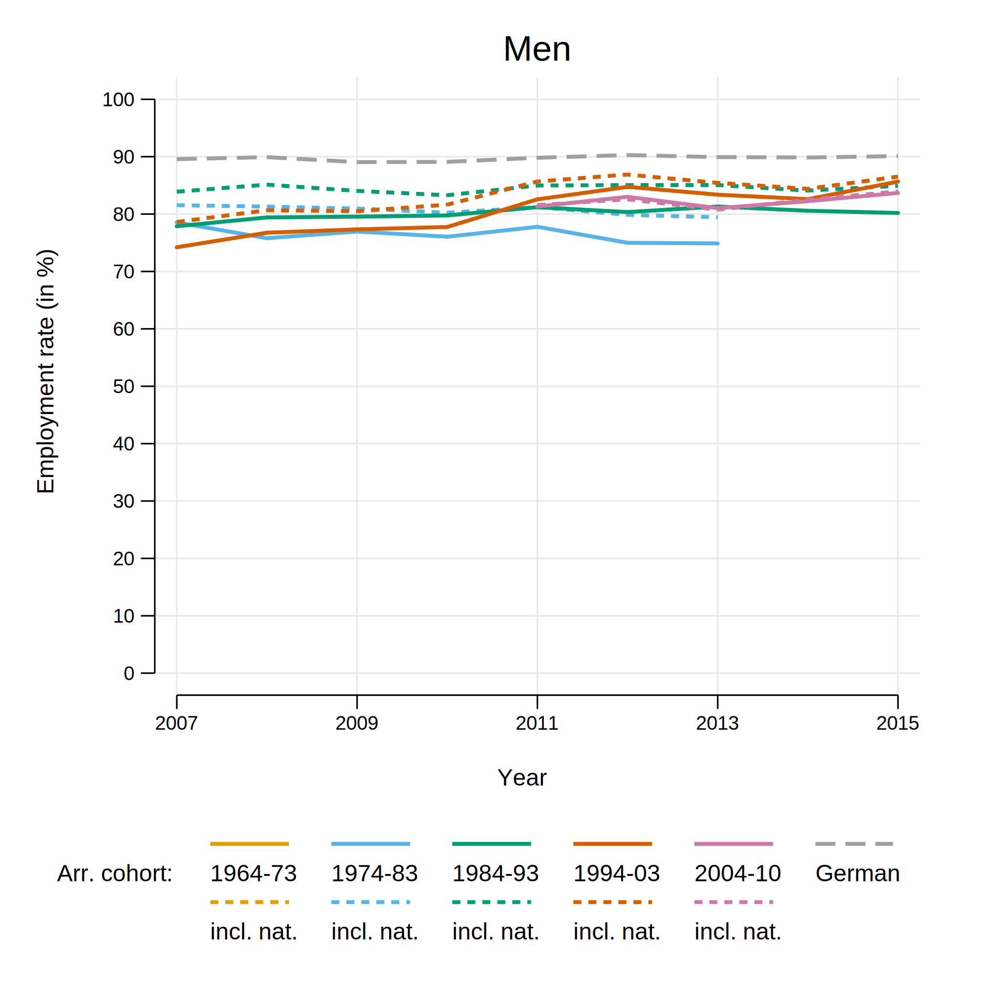(b) Men, by period
Figure 5. Employment rates shown for non-German immigrants (our standard definition, solid lines) and all immigrants including those who naturalized (dashed lines).
In term of working hours, naturalized immigrants also seem to be slightly positive selected, at least women of the cohorts 1974-83, 1984-93 and 1994-03. However, the general interpretation of our results would be unchanged when including naturalized immigrants.
Table 29. Weekly working hours (actual) by arrival cohort and naturalization, Women, 2007-2015
Expand
Arrival cohort
1964-73
1974-83
1984-93
1994-03
2004-10
Total
Mean
Mean
Mean
Mean
Mean
Mean
Non-naturalized immigrant
29.94
28.13
26.24
25.63
28.14
26.56
Naturalized immigrant
29.41
29.74
27.80
26.10
25.01
27.08
Naturalized/recognized Ethnic German
35.62
29.18
28.36
26.83
27.19
27.65
Total
30.05
28.72
27.36
26.02
27.95
26.94
Table 30. No. of obs.: Weekly working hours (actual) by arrival cohort and naturalization, Women, 2007-2015
Expand
Arrival cohort
1964-73
1974-83
1984-93
1994-03
2004-10
Total
N
n
n
n
n
n
n
Non-naturalized immigrant
194
2515
12324
25516
17122
57670
53,939
Naturalized immigrant
38
730
6125
5806
561
13260
14,767
Naturalized/recognized Ethnic German
13
1064
8318
9186
1449
20031
22,256
Total
245
4309
26767
40508
19133
90961
90,962
N
225
4,384
27,801
40,654
17,898
90,962
Table 31. Weekly working hours (actual) by arrival cohort and naturalization, Men, 2007-2015
Expand
Arrival cohort
1964-73
1974-83
1984-93
1994-03
2004-10
Total
Mean
Mean
Mean
Mean
Mean
Mean
Non-naturalized immigrant
36.65
40.20
39.28
38.09
38.04
38.46
Naturalized immigrant
47.88
41.33
39.44
39.12
38.67
39.41
Naturalized/recognized Ethnic German
38.33
39.91
39.33
39.04
38.33
39.19
Total
38.87
40.33
39.34
38.49
38.08
38.78
Table 32. No. of obs.: Weekly working hours (actual) by arrival cohort and naturalization, Men, 2007-2015
Expand
Arrival cohort
1964-73
1974-83
1984-93
1994-03
2004-10
Total
N
n
n
n
n
n
n
Non-naturalized immigrant
88
2227
11267
18779
13917
46278
41,656
Naturalized immigrant
27
704
5536
4903
403
11573
13,471
Naturalized/recognized Ethnic German
8
1067
7660
7371
1028
17135
19,861
Total
124
3998
24463
31054
15348
74987
74,988
N
122
4,157
25,973
31,048
13,688
74,988
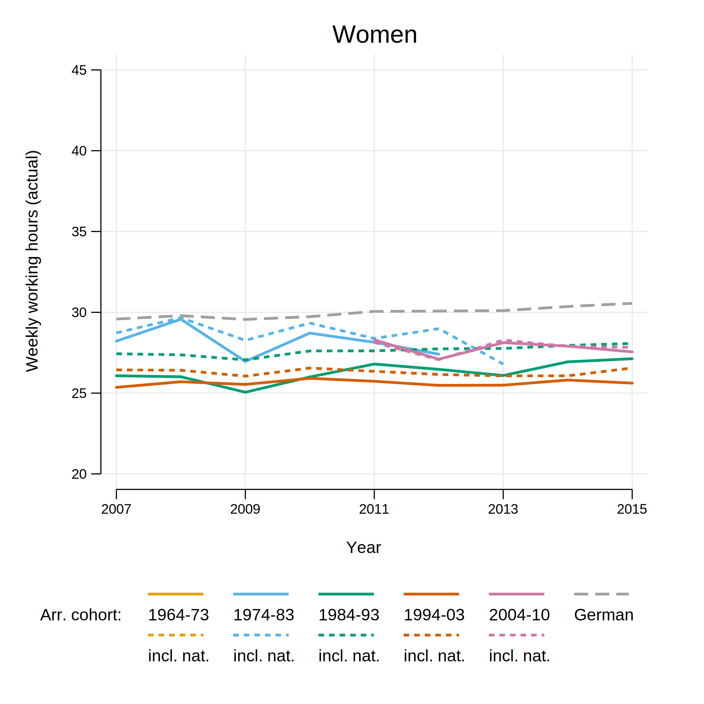(a) Women, by period(b) Men, by period
Figure 6. Weekly working hours shown for non-German immigrants (our standard definition, solid lines) and all immigrants including those who naturalized (dashed lines).
In terms of occupational status, the picture is much more mixed. Naturalized immigrants are strongly positively selected compared to the non-naturalized for cohorts 1974-83 (women and men) and 1984-1993 (women). Cohort 1994-03 seems to be negatively selected. As for the other indicators: Interpretation remains largely unchangend when considering the naturalized. However, the relative labor market outcomes across cohorts change, they all are very similar now (except for the last cohort).
Table 33. ISEI-88 (employed only) by arrival cohort and naturalization, Women, 2007-2015
Expand
Arrival cohort
1964-73
1974-83
1984-93
1994-03
2004-10
Total
Mean
Mean
Mean
Mean
Mean
Mean
Non-naturalized immigrant
30.89
36.35
35.44
38.00
42.36
38.43
Naturalized immigrant
36.16
41.18
37.19
34.21
34.27
36.01
Naturalized/recognized Ethnic German
40.63
40.66
37.61
37.25
40.75
37.78
Total
32.07
38.41
36.63
37.14
41.94
37.83
Table 34. No. of obs.: ISEI-88 (employed only) by arrival cohort and naturalization, Women, 2007-2015
Expand
Arrival cohort
1964-73
1974-83
1984-93
1994-03
2004-10
Total
N
n
n
n
n
n
n
Non-naturalized immigrant
194
2515
12324
25516
17122
57670
53,939
Naturalized immigrant
38
730
6125
5806
561
13260
14,767
Naturalized/recognized Ethnic German
13
1064
8318
9186
1449
20031
22,256
Total
245
4309
26767
40508
19133
90961
90,962
N
225
4,384
27,801
40,654
17,898
90,962
Table 35. ISEI-88 (employed only) by arrival cohort and naturalization, Men, 2007-2015
Expand
Arrival cohort
1964-73
1974-83
1984-93
1994-03
2004-10
Total
Mean
Mean
Mean
Mean
Mean
Mean
Non-naturalized immigrant
37.25
38.92
36.63
39.27
43.68
39.93
Naturalized immigrant
44.73
43.25
37.00
34.67
36.18
36.36
Naturalized/recognized Ethnic German
29.64
43.64
38.30
37.25
41.30
38.33
Total
38.17
41.04
37.25
38.00
43.35
38.96
Table 36. No. of obs.: ISEI-88 (employed only) by arrival cohort and naturalization, Men, 2007-2015
Expand
Arrival cohort
1964-73
1974-83
1984-93
1994-03
2004-10
Total
N
n
n
n
n
n
n
Non-naturalized immigrant
88
2227
11267
18779
13917
46278
41,656
Naturalized immigrant
27
704
5536
4903
403
11573
13,471
Naturalized/recognized Ethnic German
8
1067
7660
7371
1028
17135
19,861
Total
124
3998
24463
31054
15348
74987
74,988
N
122
4,157
25,973
31,048
13,688
74,988
(a) Women, by period
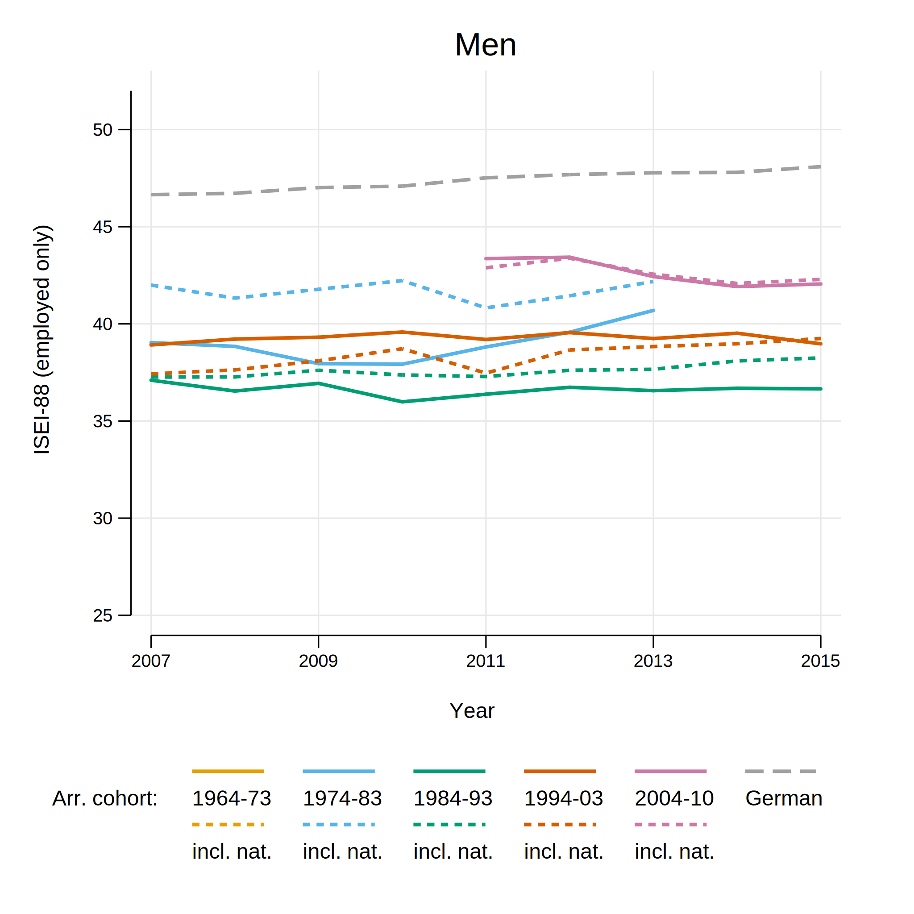(b) Men, by period
Figure 7. Employment rates shown for non-German immigrants (our standard definition, solid lines) and all immigrants including those who naturalized (dashed lines).
Table 40. Means by arrival cohort and duration of stay: Employment rate (in %), Women
Expand
Arrival cohort
German
1964-73
1974-83
1984-93
1994-03
2004-10
Total
Mean
Mean
Mean
Mean
Mean
Mean
Mean
1
44.01
22.07
26.40
35.67
32.04
2
50.78
28.96
33.18
33.98
42.46
37.87
3
53.76
37.03
32.43
37.17
46.34
41.35
4
58.03
33.14
33.98
37.89
46.39
41.89
5
60.29
39.51
38.06
42.44
49.27
45.92
6
62.76
37.44
37.27
45.11
45.65
7
64.10
38.33
39.96
47.47
47.46
8
66.43
40.34
43.02
47.62
49.35
9
67.29
35.48
44.17
49.61
49.14
10
71.44
39.37
47.13
52.19
52.53
11
71.33
39.45
47.01
54.33
53.03
12
71.37
63.56
43.59
48.68
56.13
56.67
13
74.11
62.68
44.50
49.48
57.69
14
73.44
66.57
45.46
53.28
59.69
15
75.23
60.11
45.48
55.23
59.01
16
75.93
59.74
49.64
54.53
59.96
17
75.65
60.29
49.20
54.09
59.81
18
74.89
61.49
47.54
57.30
60.31
19
76.99
58.78
48.88
61.31
61.49
20
76.64
60.18
51.40
61.11
62.33
21
77.21
61.28
51.31
62.44
63.06
22
77.78
60.88
52.27
61.22
63.04
23
77.89
57.72
52.48
62.70
24
77.66
58.83
56.15
64.21
25
76.92
61.12
55.24
64.42
26
75.33
58.81
58.76
64.30
27
72.14
57.51
55.11
61.59
28
69.54
55.86
56.79
60.73
29
69.50
56.08
55.02
60.20
30
69.67
57.07
59.90
62.22
Total
69.60
59.92
46.48
47.13
44.20
44.03
54.37
Table 41. Means by arrival cohort and duration of stay: Employment rate (in %), Men
Expand
Arrival cohort
German
1964-73
1974-83
1984-93
1994-03
2004-10
Total
Mean
Mean
Mean
Mean
Mean
Mean
Mean
1
57.12
53.54
57.41
70.44
59.63
2
67.15
77.76
63.99
61.68
74.66
69.05
3
71.73
77.65
63.75
65.21
77.95
71.26
4
77.55
77.16
66.51
68.47
82.05
74.35
5
80.06
77.12
68.61
71.94
80.45
75.64
6
81.77
78.89
71.00
72.19
75.96
7
81.39
79.71
75.06
73.54
77.43
8
83.87
82.40
76.56
75.10
79.48
9
85.53
83.58
76.87
76.20
80.54
10
84.96
84.68
78.70
78.06
81.60
11
85.05
84.42
79.05
80.04
82.14
12
85.99
92.00
86.08
78.73
81.32
84.82
13
86.26
92.32
82.54
78.34
84.87
14
87.42
91.29
84.32
78.75
85.45
15
86.53
91.77
84.88
78.41
85.40
16
87.85
90.51
82.03
77.94
84.58
17
87.51
90.73
83.04
79.94
85.31
18
86.57
90.42
82.89
79.93
84.95
19
87.40
88.37
82.09
79.66
84.38
20
87.05
90.07
80.85
76.99
83.74
21
86.93
89.20
79.79
80.66
84.14
22
88.01
84.94
81.08
80.60
83.66
23
86.32
82.06
83.65
84.01
24
87.05
82.24
81.79
83.69
25
85.85
80.16
78.55
81.52
26
86.03
75.69
80.56
80.76
27
84.72
76.02
80.58
80.44
28
82.10
77.32
74.84
78.09
29
81.97
78.87
74.62
78.49
30
86.70
78.14
69.01
77.95
Total
83.15
85.38
80.57
74.71
71.76
77.11
79.86
Table 42. Means by arrival cohort and period: Employment rate (in %), Women
Expand
Arrival cohort
Germans
1964-73
1974-83
1984-93
1994-03
2004-10
Total
Mean
Mean
Mean
Mean
Mean
Mean
Mean
1976
48.88
61.66
55.27
1978
50.83
65.07
57.95
1980
52.07
62.76
57.41
1982
53.40
60.91
57.15
1985
54.83
62.39
39.00
52.07
1987
56.07
59.32
37.21
50.87
1989
57.89
58.90
37.06
51.28
1991
64.54
64.66
47.16
58.79
1993
65.66
59.71
46.34
57.24
1995
66.76
59.83
46.30
37.13
52.51
1996
68.44
59.70
46.43
38.53
53.27
1997
69.49
55.40
49.36
38.81
53.27
1998
70.43
51.43
48.56
41.54
52.99
1999
72.20
54.48
50.16
43.10
54.98
2000
73.67
56.29
51.83
46.85
57.16
2001
74.62
59.38
53.91
49.54
59.36
2002
74.55
57.07
58.72
51.22
60.39
2003
74.46
54.49
54.70
51.23
58.72
2004
74.08
56.67
51.86
39.09
55.43
2005
73.67
55.48
55.09
40.40
56.16
2006
75.76
53.89
54.69
43.82
57.04
2007
77.12
57.11
58.31
47.17
59.93
2008
77.63
56.29
59.84
48.82
60.65
2009
78.25
60.28
58.18
52.64
62.34
2010
79.29
65.01
59.82
53.39
64.38
2011
80.72
62.37
59.89
56.47
49.63
61.82
2012
80.88
60.20
63.79
58.97
49.76
62.72
2013
81.54
58.99
61.18
59.82
53.69
63.04
2014
82.00
63.55
59.75
54.19
64.87
2015
82.77
61.55
62.42
52.85
64.90
Total
69.75
59.08
52.21
52.65
51.90
52.02
58.16
Table 43. Means by arrival cohort and period: Employment rate (in %), Men
Expand
Arrival cohort
Germans
1964-73
1974-83
1984-93
1994-03
2004-10
Total
Mean
Mean
Mean
Mean
Mean
Mean
Mean
1976
94.43
93.88
94.15
1978
94.71
94.95
94.83
1980
94.91
96.06
95.49
1982
92.96
90.99
91.97
1985
90.80
89.61
76.54
85.65
1987
89.80
89.14
80.31
86.42
1989
90.60
90.18
82.74
87.84
1991
91.66
89.93
87.73
89.77
1993
90.15
85.80
82.48
86.14
1995
89.39
79.00
82.84
71.30
80.63
1996
88.78
76.57
81.99
69.60
79.24
1997
88.46
77.04
81.54
69.63
79.17
1998
89.04
75.96
82.78
73.93
80.42
1999
89.62
76.40
78.43
76.81
80.32
2000
90.23
76.23
82.44
81.11
82.50
2001
89.97
76.32
83.00
81.56
82.71
2002
88.84
75.51
80.60
79.76
81.18
2003
87.85
74.24
78.86
77.72
79.67
2004
86.91
75.72
75.37
67.29
76.32
2005
87.13
77.11
75.44
69.08
77.19
2006
87.94
77.29
77.40
70.73
78.34
2007
89.22
78.55
77.89
74.23
79.97
2008
89.64
75.80
79.42
76.75
80.41
2009
88.73
76.96
79.56
77.34
80.65
2010
88.79
76.06
79.76
77.76
80.59
2011
89.68
77.79
81.21
82.57
81.33
82.52
2012
90.12
75.00
80.35
84.75
83.01
82.65
2013
89.75
74.89
81.32
83.39
81.04
82.08
2014
89.63
80.58
82.60
82.25
83.77
2015
89.94
80.20
85.67
83.69
84.87
Total
89.99
83.77
79.48
77.62
77.68
82.26
82.62
Additional check for drop in employment rates of men of 1964-1973 cohort beginning in 1991: Particularly affected by unemployment, as shown in the tables below. Many seem to have chosen early retirement over unemployment.
Table 44. Employment status cohort 1964-1973 by period, Men
Expand
Employment status
Employed
Unemployed (available)
Non-employed
Total
n
%
n
%
n
%
n
%
1976 (n=3,160)
422,171
93.9
18,679
4.2
8,857
2.0
449,707
100.0
1978 (n=3,410)
459,138
95.0
14,686
3.0
9,714
2.0
483,538
100.0
1980 (n=3,622)
495,156
96.1
10,714
2.1
9,571
1.9
515,441
100.0
1982 (n=3,228)
416,729
91.0
31,286
6.8
10,000
2.2
458,015
100.0
1985 (n=3,981)
501,413
89.6
44,339
7.9
13,807
2.5
559,559
100.0
1987 (n=3,630)
458,933
89.1
43,345
8.4
12,586
2.4
514,864
100.0
1989 (n=2,557)
435,512
90.2
31,660
6.6
15,743
3.3
482,915
100.0
1991 (n=2,169)
362,518
89.9
22,379
5.6
18,222
4.5
403,119
100.0
1993 (n=1,879)
332,803
85.8
33,877
8.7
21,195
5.5
387,875
100.0
1995 (n=1,548)
259,055
79.0
43,229
13.2
25,616
7.8
327,901
100.0
1996 (n=1,357)
223,305
76.6
35,602
12.2
32,711
11.2
291,618
100.0
1997 (n=1,131)
184,111
77.0
29,369
12.3
25,503
10.7
238,982
100.0
1998 (n=1,030)
161,094
76.0
26,896
12.7
24,099
11.4
212,089
100.0
1999 (n=840)
133,320
76.4
20,446
11.7
20,729
11.9
174,495
100.0
2000 (n=680)
108,796
76.2
15,778
11.1
18,152
12.7
142,725
100.0
2001 (n=581)
93,896
76.3
11,018
9.0
18,113
14.7
123,027
100.0
2002 (n=441)
70,399
75.5
9,950
10.7
12,888
13.8
93,237
100.0
2003 (n=346)
55,193
74.2
9,968
13.4
9,180
12.3
74,341
100.0
2004 (n=229)
35,528
72.9
7,996
16.4
5,239
10.7
48,763
100.0
2005 (n=123)
20,075
67.8
5,598
18.9
3,915
13.2
29,589
100.0
2006 (n=102)
18,549
76.3
2,257
9.3
3,515
14.5
24,321
100.0
2007 (n=51)
8,507
72.0
1,130
9.6
2,178
18.4
11,815
100.0
2008 (n=19)
2,245
56.7
651
16.5
1,062
26.8
3,958
100.0
2009 (n=10)
1,685
87.8
234
12.2
0
0.0
1,919
100.0
Total (n=36,124)
5,260,130
86.9
471,087
7.8
322,596
5.3
6,053,813
100.0
Table 45. Main subsistence source cohort 1964-1973 by period, Men
Expand
Main subsistence source
Employment
Unemployment and other (also non-public) benefits
Pension
Maintenance
Own wealth, rent, interest
Total
n
%
n
%
n
%
n
%
n
%
n
%
1976 (n=3,160)
425,885
94.7
14,250
3.2
2,000
0.4
6,571
1.5
1,000
0.2
449,707
100.0
1978 (n=3,410)
464,138
96.0
9,543
2.0
1,857
0.4
7,571
1.6
429
0.1
483,538
100.0
1980 (n=3,622)
498,156
96.6
6,714
1.3
3,143
0.6
6,000
1.2
1,429
0.3
515,441
100.0
1982 (n=3,228)
422,300
92.2
23,000
5.0
2,857
0.6
8,429
1.8
1,429
0.3
458,015
100.0
1985 (n=3,981)
500,984
89.5
37,706
6.7
7,986
1.4
10,455
1.9
2,429
0.4
559,559
100.0
1987 (n=3,630)
458,076
89.0
39,060
7.6
7,586
1.5
10,143
2.0
0
0.0
514,864
100.0
1989 (n=2,557)
435,039
90.1
30,169
6.2
11,167
2.3
6,012
1.2
528
0.1
482,915
100.0
1991 (n=2,169)
361,777
89.7
22,012
5.5
12,652
3.1
6,271
1.6
407
0.1
403,119
100.0
1993 (n=1,879)
332,269
85.7
30,899
8.0
16,472
4.2
7,996
2.1
239
0.1
387,875
100.0
1995 (n=1,548)
258,204
78.7
38,725
11.8
21,980
6.7
8,206
2.5
784
0.2
327,901
100.0
1996 (n=1,357)
222,036
76.1
43,107
14.8
20,866
7.2
4,961
1.7
647
0.2
291,618
100.0
1997 (n=1,131)
181,477
75.9
36,044
15.1
15,084
6.3
5,390
2.3
988
0.4
238,982
100.0
1998 (n=1,030)
160,283
75.6
29,453
13.9
17,244
8.1
4,429
2.1
681
0.3
212,089
100.0
1999 (n=840)
131,935
75.6
24,936
14.3
12,673
7.3
4,156
2.4
796
0.5
174,495
100.0
2000 (n=680)
108,596
76.1
19,037
13.3
11,513
8.1
3,163
2.2
417
0.3
142,725
100.0
2001 (n=581)
92,251
75.0
15,900
12.9
11,303
9.2
3,367
2.7
205
0.2
123,027
100.0
2002 (n=441)
69,718
74.8
12,247
13.1
8,543
9.2
2,285
2.5
445
0.5
93,237
100.0
2003 (n=346)
54,657
73.5
11,882
16.0
5,649
7.6
2,153
2.9
0
0.0
74,341
100.0
2004 (n=229)
34,544
70.8
9,380
19.2
3,705
7.6
1,134
2.3
0
0.0
48,763
100.0
2005 (n=123)
19,444
65.7
5,963
20.2
2,858
9.7
1,323
4.5
0
0.0
29,589
100.0
2006 (n=102)
18,351
75.5
2,692
11.1
2,859
11.8
177
0.7
243
1.0
24,321
100.0
2007 (n=51)
7,963
67.4
2,040
17.3
1,250
10.6
304
2.6
258
2.2
11,815
100.0
2008 (n=19)
2,007
50.7
1,013
25.6
814
20.6
124
3.1
0
0.0
3,958
100.0
2009 (n=10)
1,685
87.8
234
12.2
0
0.0
0
0.0
0
0.0
1,919
100.0
Total (n=36,124)
5,261,774
86.9
466,003
7.7
202,063
3.3
110,619
1.8
13,353
0.2
6,053,813
100.0
3.2 Working Hours
(a) Women, by duration of stay(b) Men, by duration of stay(c) Women, by period
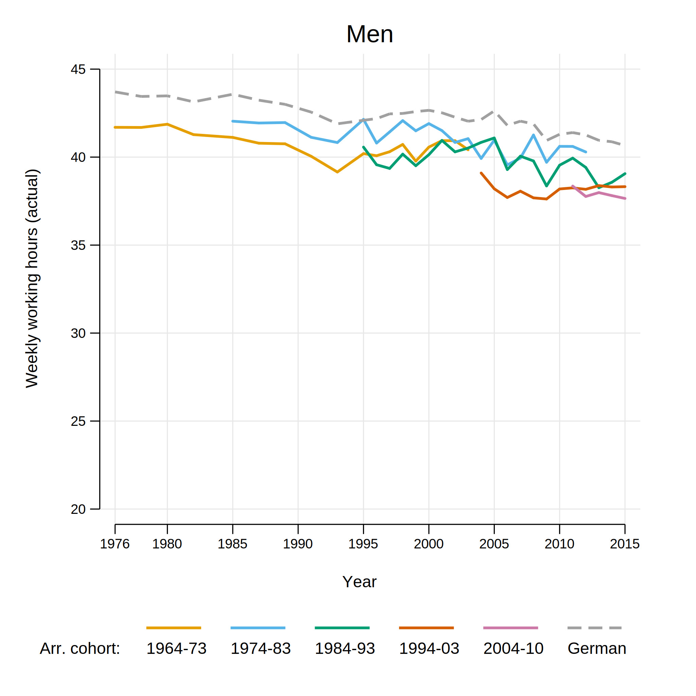(d) Men, by period
Figure 9. Weekly working hours by arrival cohort, gender, duration of stay and period.
Figure 10. Full-time, part-time and marginal employment (as share of employed sample population) by arrival cohort, gender, and period.
Full-time employment means working at least 35 hours per week, part-time employment 15-35 hours, and marginal employment 1-15 hours. Sample is restricted to western Germany, including Berlin . Source: Microcensus Scientific Use Files, DOI: 10.21242/12211.1976.00.00.3.1.0 to 10.21242/12211.2015.00.00.3.1.0, own calculations.
3.3 ISEI
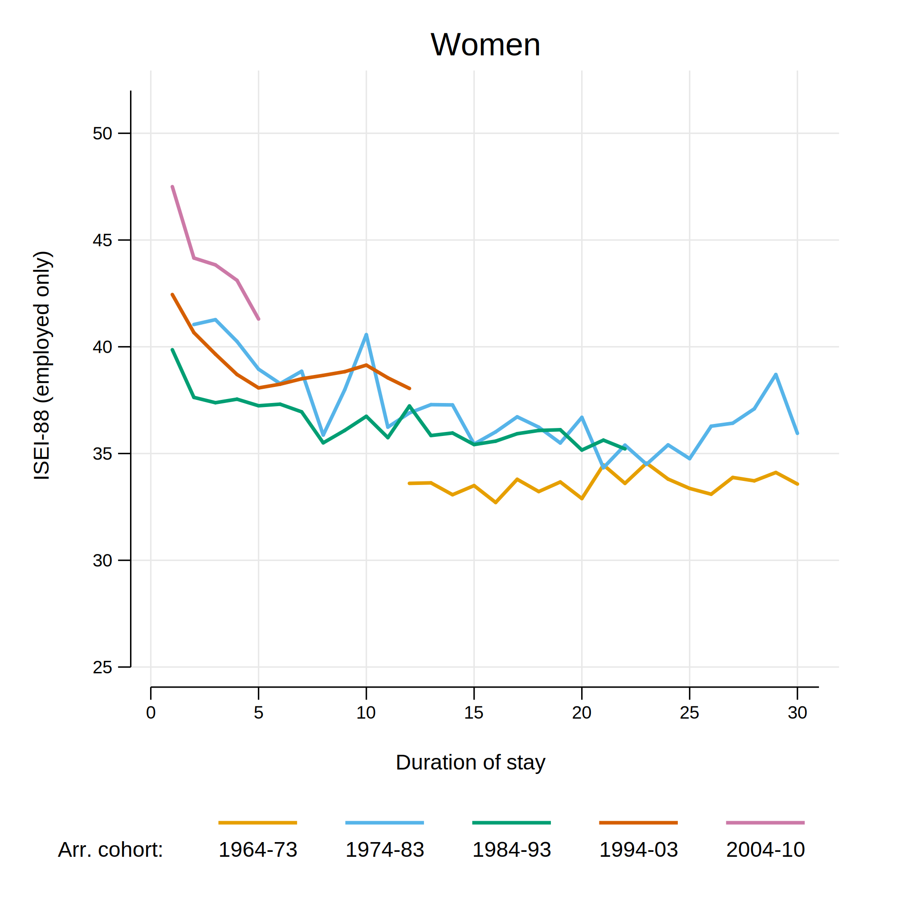(a) Women, by duration of stay
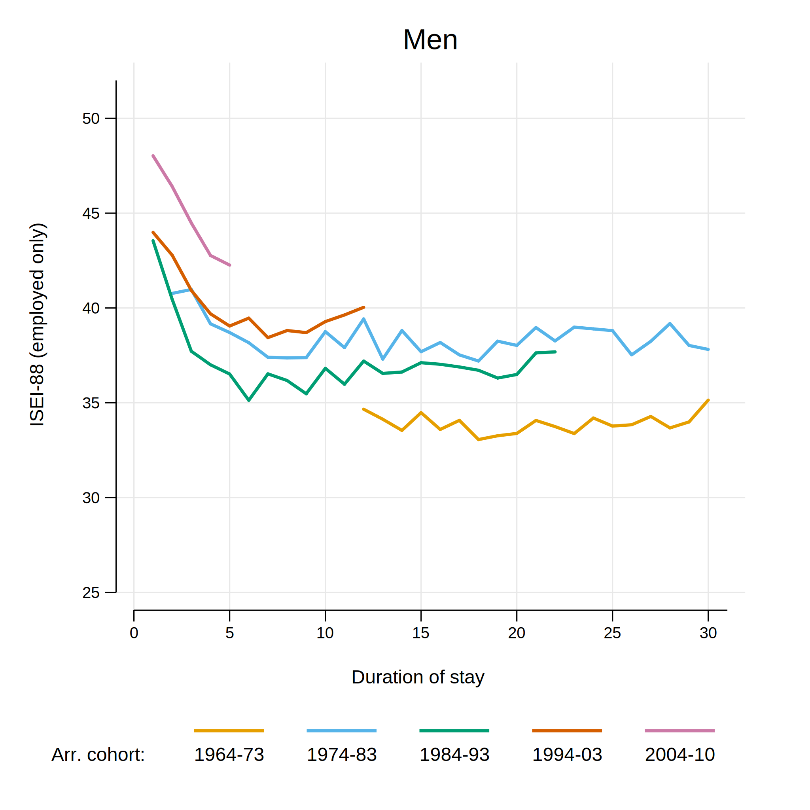(b) Men, by duration of stay
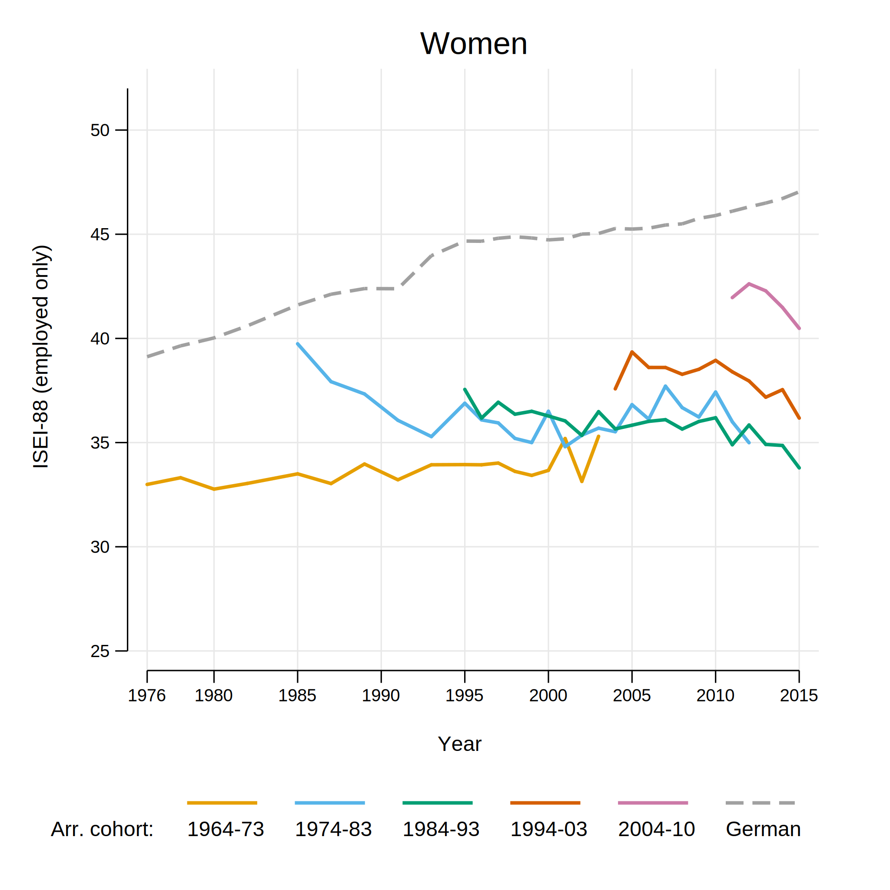(c) Women, by period(d) Men, by period
Figure 11. ISEI-88 scores by arrival cohort, gender, duration of stay and period.
Table 50. Means by arrival cohort and duration of stay: ISEI-88 (employed only), Women
Expand
Arrival cohort
German
1964-73
1974-83
1984-93
1994-03
2004-10
Total
Mean
Mean
Mean
Mean
Mean
Mean
Mean
1
47.95
39.86
42.45
47.50
44.44
2
42.34
41.04
37.63
40.66
44.16
41.17
3
39.74
41.27
37.38
39.66
43.84
40.38
4
37.91
40.25
37.55
38.70
43.11
39.50
5
36.11
38.95
37.24
38.07
41.30
38.33
6
36.14
38.28
37.31
38.25
37.49
7
35.79
38.85
36.95
38.50
37.52
8
36.16
35.87
35.50
38.66
36.55
9
36.48
37.99
36.09
38.83
37.35
10
36.46
40.57
36.74
39.14
38.23
11
36.84
36.24
35.75
38.55
36.84
12
37.02
33.60
36.90
37.23
38.05
36.56
13
36.38
33.63
37.29
35.84
35.78
14
36.33
33.07
37.28
35.96
35.66
15
36.93
33.50
35.44
35.42
35.32
16
36.99
32.71
36.01
35.58
35.32
17
36.62
33.79
36.72
35.93
35.77
18
37.34
33.22
36.24
36.08
35.72
19
37.72
33.67
35.49
36.11
35.75
20
38.26
32.89
36.69
35.16
35.75
21
38.16
34.47
34.33
35.63
35.65
22
38.76
33.60
35.39
35.22
35.74
23
38.76
34.55
34.50
35.94
24
38.72
33.80
35.41
35.98
25
38.70
33.37
34.76
35.61
26
40.70
33.09
36.28
36.69
27
40.32
33.88
36.42
36.87
28
40.90
33.72
37.10
37.24
29
43.20
34.11
38.70
38.67
30
41.90
33.57
35.95
37.14
Total
38.52
33.59
37.11
36.46
39.13
43.98
37.28
Table 51. Means by arrival cohort and duration of stay: ISEI-88 (employed only), Men
Expand
Arrival cohort
German
1964-73
1974-83
1984-93
1994-03
2004-10
Total
Mean
Mean
Mean
Mean
Mean
Mean
Mean
1
49.37
43.55
43.99
48.03
46.23
2
42.28
40.77
40.45
42.78
46.41
42.54
3
41.03
40.98
37.72
40.93
44.48
41.03
4
38.67
39.16
37.01
39.69
42.77
39.46
5
37.18
38.71
36.52
39.05
42.26
38.74
6
36.40
38.17
35.13
39.46
37.29
7
35.68
37.40
36.53
38.44
37.01
8
36.38
37.37
36.18
38.81
37.18
9
36.46
37.38
35.48
38.70
37.01
10
36.51
38.75
36.82
39.28
37.84
11
36.79
37.91
35.98
39.64
37.58
12
37.03
34.66
39.42
37.20
40.04
37.67
13
36.80
34.13
37.31
36.55
36.20
14
36.99
33.54
38.81
36.62
36.49
15
37.18
34.48
37.70
37.12
36.62
16
36.56
33.60
38.18
37.03
36.34
17
37.12
34.07
37.53
36.89
36.40
18
37.50
33.06
37.20
36.72
36.12
19
37.68
33.26
38.25
36.31
36.37
20
38.46
33.38
38.03
36.50
36.59
21
38.68
34.07
38.97
37.63
37.34
22
39.46
33.75
38.27
37.69
37.29
23
39.39
33.38
38.99
37.25
24
39.99
34.20
38.90
37.70
25
40.81
33.77
38.81
37.80
26
41.43
33.84
37.53
37.60
27
41.47
34.28
38.24
38.00
28
42.63
33.68
39.18
38.50
29
42.49
33.99
38.02
38.17
30
44.08
35.14
37.82
39.01
Total
39.08
33.91
38.41
37.16
40.07
44.79
38.06
Table 52. Means by arrival cohort and period: ISEI-88 (employed only), Women
Expand
Arrival cohort
Germans
1964-73
1974-83
1984-93
1994-03
2004-10
Total
Mean
Mean
Mean
Mean
Mean
Mean
Mean
1976
39.12
32.99
36.06
1978
39.64
33.32
36.48
1980
40.02
32.77
36.40
1982
40.61
33.04
36.82
1985
41.61
33.50
39.74
38.28
1987
42.12
33.03
37.92
37.69
1989
42.39
33.97
37.33
37.90
1991
42.38
33.21
36.07
37.22
1993
43.97
33.94
35.29
37.73
1995
44.67
33.94
36.89
37.55
38.27
1996
44.67
33.94
36.09
36.18
37.72
1997
44.81
34.02
35.95
36.94
37.93
1998
44.88
33.62
35.20
36.36
37.52
1999
44.82
33.43
35.00
36.50
37.44
2000
44.73
33.67
36.50
36.28
37.79
2001
44.78
35.19
34.80
36.04
37.70
2002
45.01
33.14
35.36
35.35
37.21
2003
45.04
35.30
35.69
36.48
38.13
2004
45.28
35.52
35.66
37.58
38.51
2005
45.25
36.82
35.83
39.35
39.31
2006
45.29
36.13
36.02
38.61
39.01
2007
45.44
37.71
36.10
38.60
39.46
2008
45.50
36.68
35.65
38.28
39.03
2009
45.76
36.23
36.01
38.52
39.13
2010
45.90
37.43
36.19
38.95
39.62
2011
46.11
36.00
34.90
38.40
41.96
39.47
2012
46.31
34.99
35.84
37.96
42.62
39.55
2013
46.50
34.91
37.18
42.28
40.22
2014
46.71
34.86
37.54
41.49
40.15
2015
47.04
33.79
36.18
40.48
39.37
Total
44.21
33.67
36.32
35.88
38.09
41.77
38.41
Table 53. Means by arrival cohort and period: ISEI-88 (employed only), Men
Expand
Arrival cohort
Germans
1964-73
1974-83
1984-93
1994-03
2004-10
Total
Mean
Mean
Mean
Mean
Mean
Mean
Mean
1976
42.16
34.07
38.11
1978
41.98
33.83
37.90
1980
42.11
33.22
37.66
1982
42.83
34.03
38.43
1985
43.58
33.54
39.55
38.89
1987
43.86
34.11
37.48
38.48
1989
44.13
33.53
38.21
38.63
1991
43.92
33.63
39.37
38.97
1993
44.75
33.45
37.62
38.61
1995
45.12
34.39
38.16
37.44
38.78
1996
45.11
33.72
37.25
35.77
37.96
1997
45.30
34.20
37.20
35.88
38.14
1998
45.35
33.85
37.47
36.28
38.24
1999
45.25
34.09
38.74
36.05
38.53
2000
45.25
34.57
37.87
36.36
38.51
2001
45.39
34.13
38.19
36.17
38.47
2002
45.56
34.33
39.24
35.84
38.74
2003
45.71
35.66
38.57
35.90
38.96
2004
45.70
37.67
36.60
39.38
39.84
2005
46.14
39.56
38.55
40.77
41.26
2006
46.11
38.30
37.14
40.02
40.39
2007
46.05
39.04
37.10
38.92
40.28
2008
46.12
38.84
36.55
39.22
40.18
2009
46.46
37.95
36.94
39.31
40.17
2010
46.57
37.93
35.99
39.58
40.02
2011
46.91
38.81
36.38
39.20
43.36
40.93
2012
47.15
39.57
36.74
39.55
43.43
41.29
2013
47.29
40.69
36.56
39.25
42.44
41.25
2014
47.35
36.69
39.52
41.92
41.37
2015
47.67
36.65
38.97
42.05
41.34
Total
45.23
34.02
38.47
36.55
39.47
42.64
39.52
Additional check for age restriction effects: Regarding skill selectivity in arrival age, our sample restriction to persons between age 25 and 54 means that migrants arriving at age 18-23 ‘grow into’ our sample. For example, a person who immigrated at age 20 is first part of our analysis sample after 5 years of stay in Germany. If those young migrants who grow into our sample are less skilled and take on lower status employment than older arrivals who are already included, this might explain part of the decline in occupational status over the first years of residence. Comparing the educational levels between these two groups for a duration of stay of 1-6 years, this general pattern is indeed what we find for all cohorts but the first (see Tables 15, 19). Consequently, accounting for this kind of selectivity in our occupational status analysis (by extending the age range to 18-54) leads to attenuated declines in ISEI scores in the first years of residence, particularly for women:
(a) Women, age 25-54(b) Men, age 25-54(c) Women, age 18-54(d) Men, age 18-54
Figure 12. ISEI-88 scores by arrival cohort, gender, and duration of stay and period. Different age restrictions.
Additional check for possible employment delays for the less educated: Turning to our second assumed selection issue, employment delays for the lower skilled, we compare the absolute number of employed migrants by cohort and duration of stay between different educational levels. Generally, in the very first years of residence, the number of employed migrants with ISCED levels 5-6 is as high or even higher than the number of those with ISCED levels 0-2 and 3-4. However, this composition quickly changes with longer durations of stay, when more and more migrants with low or medium educational levels take up employment. As a result, the average education of migrants in employment decreases in the first years of stay, matching the observed initial decline in occupational status Despite some smaller differences, this general pattern seems to hold for women and men of all cohorts.
(a) Women
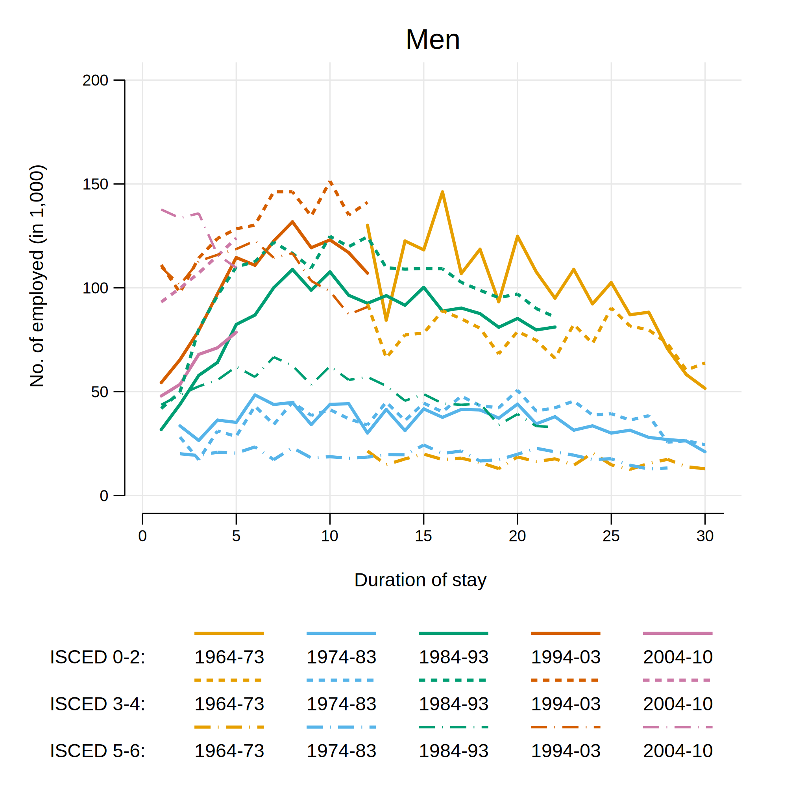(b) Men
Figure 13. Number of persons in employment (population projection) by arrival cohort, gender, and duration of stay.
Destatis (2020). Bevölkerung und Erwerbstätigkeit: Wanderungen.
Ganzeboom, H. B. G., De Graaf, P. M. & Treiman, D. J. (1992). A Standard International Socio-Economic Index of Occupational Status. Social Science Research, 21, 1–56. https://doi.org/bqszp9